와인 소개와 와인 이야기
네이버 블로그에 올린 글 189편을 사이트에서도 읽을 수 있어요. 글마다 한 줄 요약을 먼저 두었어요.
 와인 소개
와인 소개오퍼스원 오버추어 2021
오퍼스원의 ‘서곡’, 처음으로 빈티지를 단 오버추어
오퍼스원 오버추어 2021은 오퍼스원과 같은 포도밭, 같은 팀이 만든, 처음으로 빈티지가 표기된 오버추어예요.
 와인 소개
와인 소개샤또 페이라솔 레드 2020
템플 기사단 영지의 오래된 포도나무로 만든 프로방스 레드
샤또 페이라솔 레드 2020은 로제의 명가가 가장 오래된 포도나무로 만든, 묵직하면서도 부드러운 프로방스 레드예요.
 와인 소개
와인 소개샤또 보빌라쥬 메독 크뤼 부르주아 2022
보르도 레드 와인 추천, 메독이 인정한 ‘크뤼 부르주아’란?
샤또 보빌라쥬 메독 크뤼 부르주아 2022는 2025년 크뤼 부르주아 공식 등급 + 100년 가까운 포도밭 + 정통 메독 블렌딩이에요.
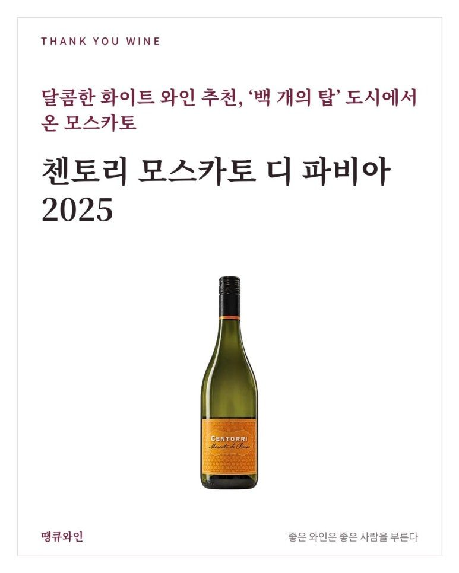
와인 소개첸토리 모스카토 디 파비아 2025
달콤한 화이트 와인 추천, ‘백 개의 탑’ 도시에서 온 모스카토
첸토리 모스카토 디 파비아 2025는 낮은 알코올 + 은은한 기포 + 복숭아·살구 향의 달콤함이에요.
와인 소개와이너리 여행 가 볼 만한 곳
해외 와인 관광 명소부터 영동·대부도 국내 와이너리 체험까지
와인을 좋아하다 보면 한 번쯤 꿈꾸게 됩니다.
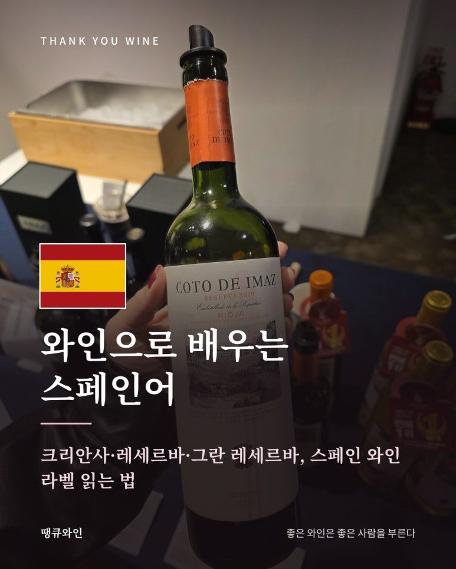
와인 소개와인으로 배우는 스페인어
크리안사·레세르바·그란 레세르바, 스페인 와인 라벨 읽는 법
와인으로 배우는 스페인어는 크리안사, 레세르바, 그란 레세르바만 알아도 숙성 정도가 라벨에서 한눈에 보인다는 것이에요.
 와인 소개
와인 소개도멘 그노 말벡 추천
아르헨티나 말고 프랑스 말벡, 왜 이름이 '르 꼬뜨'일까?
도멘 그노 말벡 추천은 말벡의 고향 프랑스 루아르에서 ‘꼬뜨’라는 이름으로 만든, 살짝 차게 마셔도 맛있는 산뜻한 레드예요.
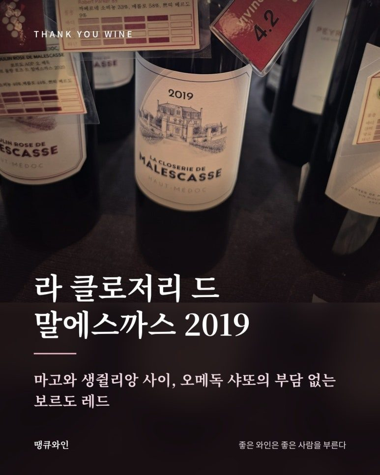
와인 소개라 클로저리 드 말에스까스 2019
마고와 생쥘리앙 사이, 오메독 샤또의 부담 없는 보르도 레드
라 클로저리 드 말에스까스 2019는 마고와 생쥘리앙 사이 오메독 샤또가 만든, 지금 마시기 딱 좋게 익은 2019 보르도예요.
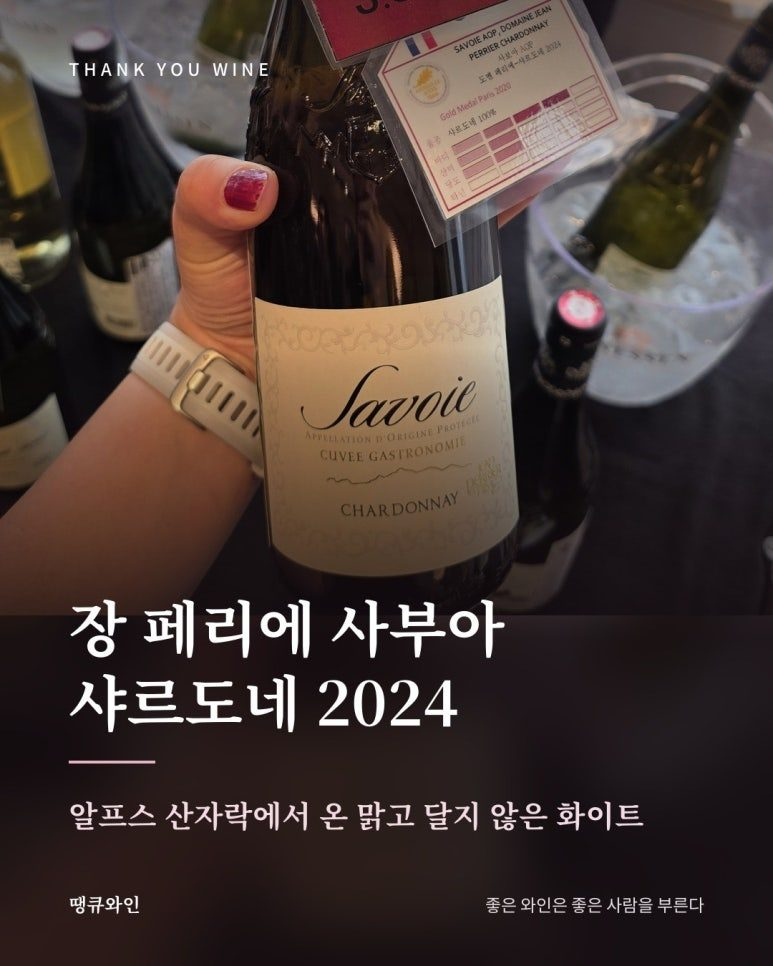
와인 소개장 페리에 사부아 샤르도네 2024
알프스 산자락에서 온 맑고 달지 않은 화이트
장 페리에 사부아 샤르도네 2024는 1853년부터 7대째 알프스 산비탈을 손으로 일궈 온 가족의 맑은 산악 샤르도네예요.
 와인 소개
와인 소개요즘 레드와인이 가벼워진 이유
조기 수확, 칠링 레드, 그리고 묵직한 레드가 반가운 요즘
요즘 레드와인을 열어 보면 예전과 느낌이 조금 다릅니다.
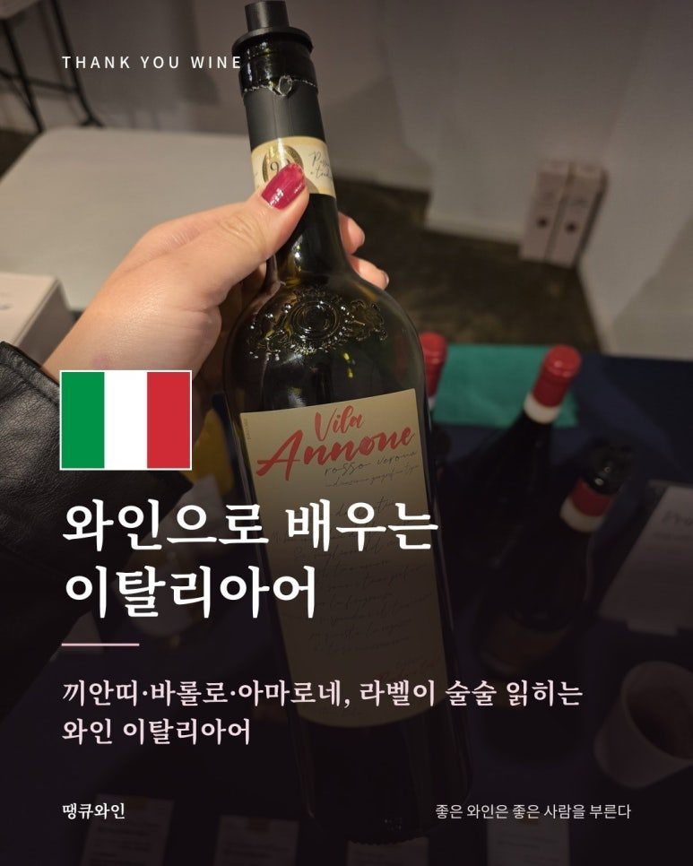
와인 소개와인으로 배우는 이탈리아어
끼안띠·바롤로·아마로네, 라벨이 술술 읽히는 와인 이탈리아어
와인으로 배우는 이탈리아어는 몇 가지 단어만 알아도 끼안띠, 바롤로, 아마로네 라벨이 술술 읽힌다는 것이에요.
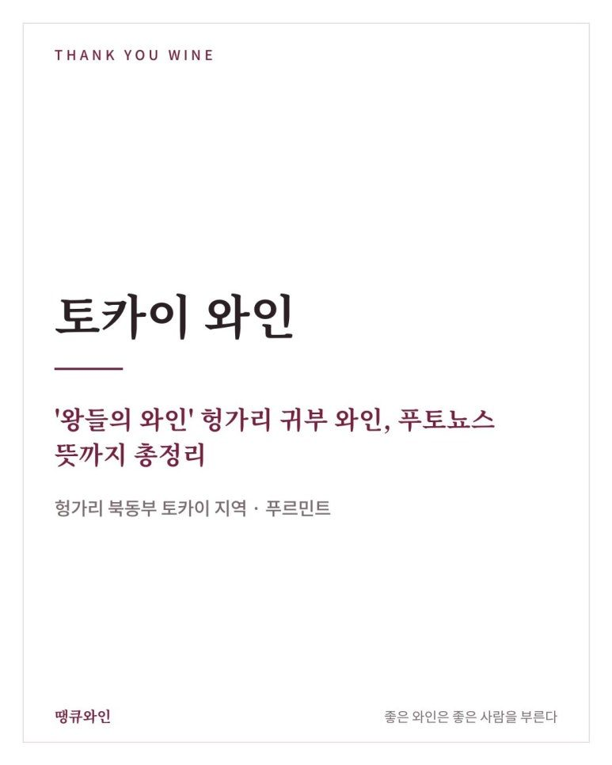
와인 소개토카이 와인
'왕들의 와인' 헝가리 귀부 와인, 푸토뇨스 뜻까지 총정리
토카이 와인은 귀부 포도로 만든 헝가리 스위트 와인, 라벨의 푸토뇨스 숫자가 단맛을 알려준다는 것이에요.
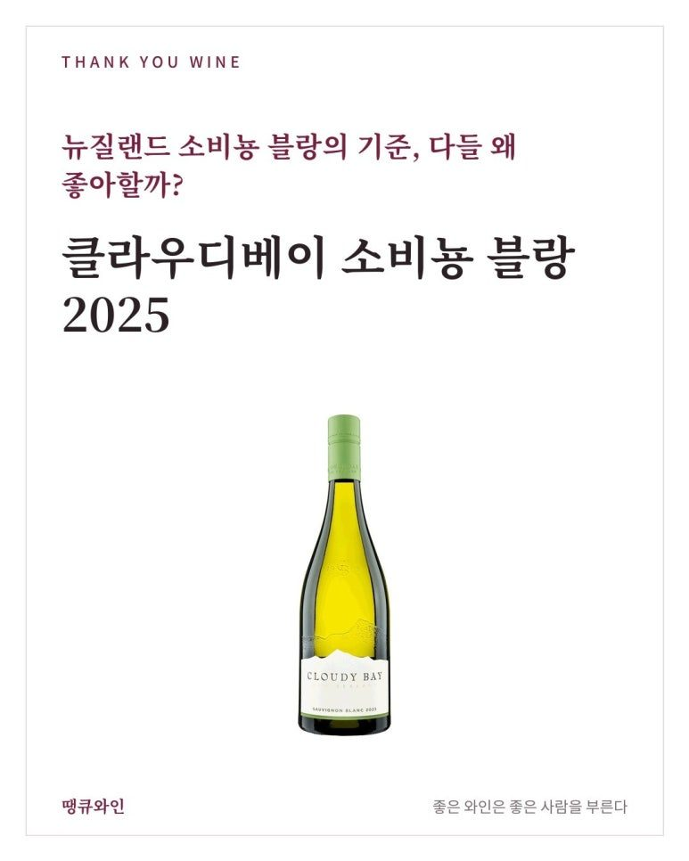
와인 소개클라우디베이 소비뇽 블랑 2025
뉴질랜드 소비뇽 블랑의 기준, 다들 왜 좋아할까?
클라우디베이 소비뇽 블랑 2025는 뉴질랜드 소비뇽 블랑을 세계에 알린, 말보로 소비뇽 블랑의 기준 같은 와인이에요.
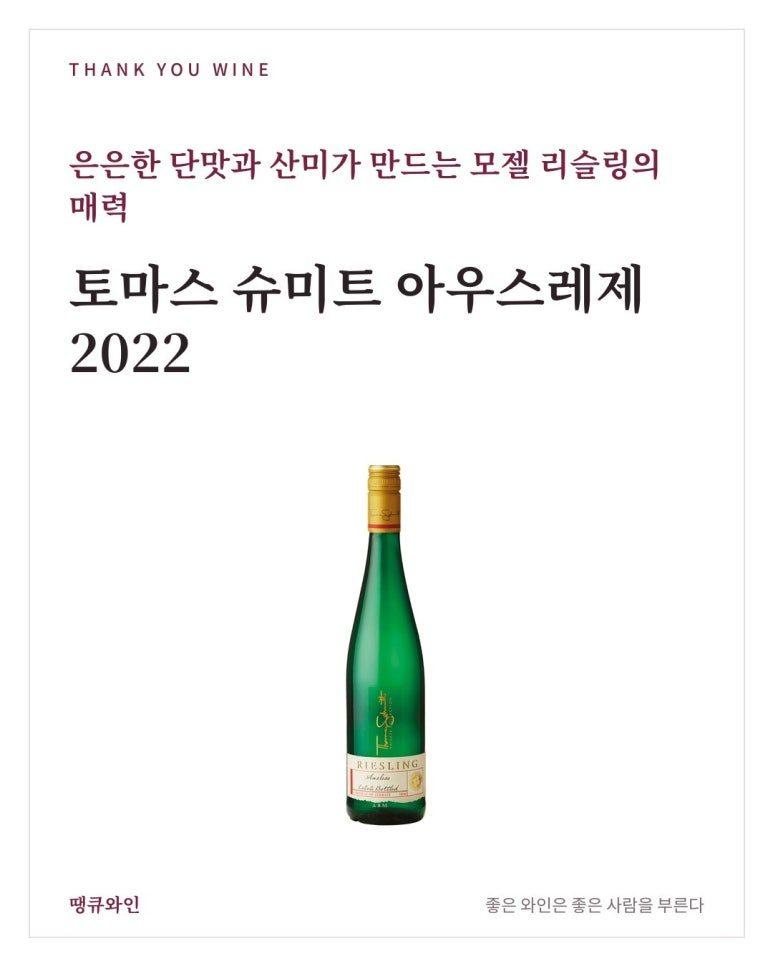
와인 소개토마스 슈미트 아우스레제 2022
은은한 단맛과 산미가 만드는 모젤 리슬링의 매력
토마스 슈미트 아우스레제 2022는 은은한 단맛과 생생한 산미가 함께 어우러지는 모젤 리슬링 아우스레제예요.
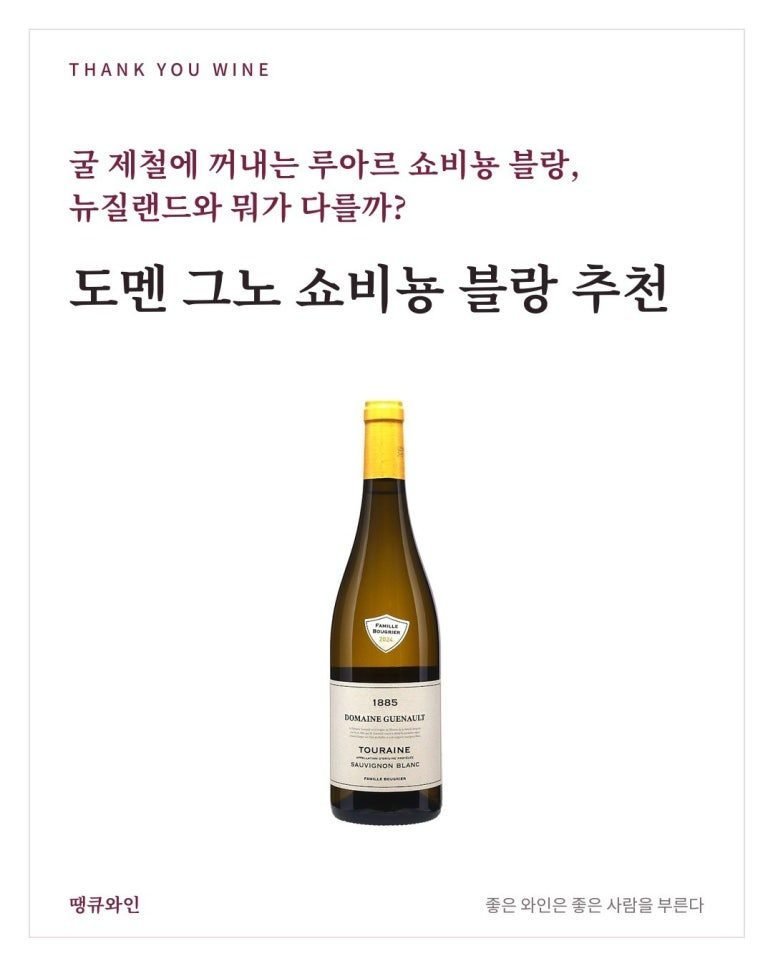
와인 소개도멘 그노 쇼비뇽 블랑 추천
굴 제철에 꺼내는 루아르 쇼비뇽 블랑, 뉴질랜드와 뭐가 다를까?
도멘 그노 쇼비뇽 블랑 추천은 쇼비뇽 블랑의 고향 루아르의 산뜻함을 부담 없이 경험할 수 있는 한 병이에요.
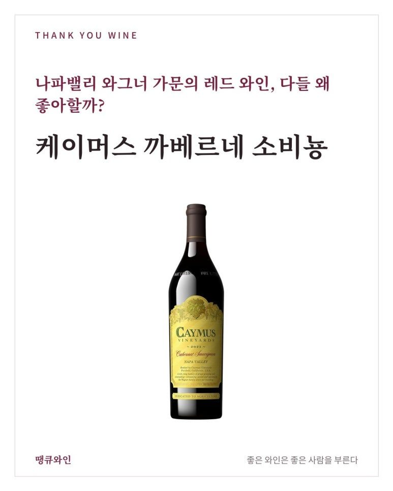
와인 소개케이머스 까베르네 소비뇽
나파밸리 와그너 가문의 레드 와인, 다들 왜 좋아할까?
케이머스 까베르네 소비뇽은 와그너 가문이 1972년 세운 나파밸리 가족 와이너리 케이머스 빈야드의 풀바디 레드로, 진한 검은 과실과 부드러운 타닌이 특징이에요. 나파밸리 까베르네 소비뇽이 어떤 맛인지 가장 선명하게
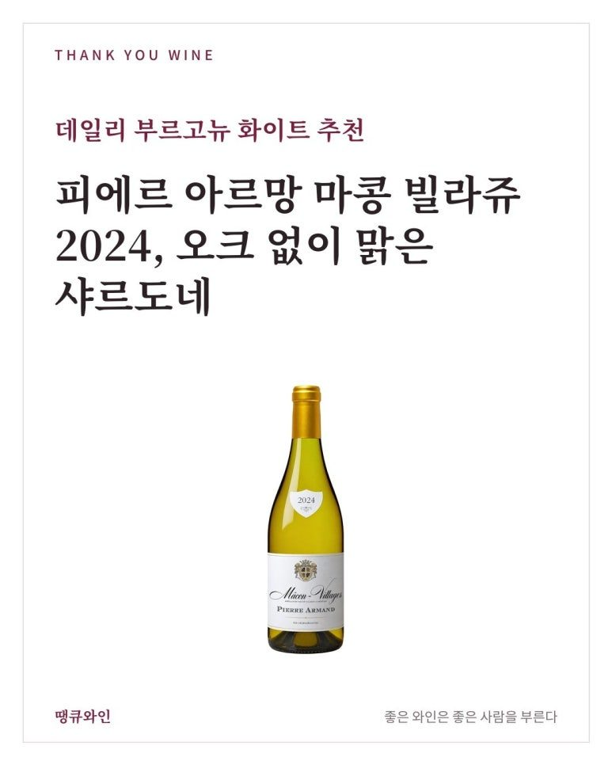
와인 소개데일리 부르고뉴 화이트 추천
피에르 아르망 마콩 빌라쥬 2024, 오크 없이 맑은 샤르도네
피에르 아르망 마콩 빌라쥬 2024는 부르고뉴 마코네의 샤르도네 100% 화이트로, 오크 없이 산뜻하고 미네랄이 살아 있는 드라이 스타일이에요. 부르고뉴 화이트 입문이나 데일리 화이트, 해산물 페어링에 맞아요.
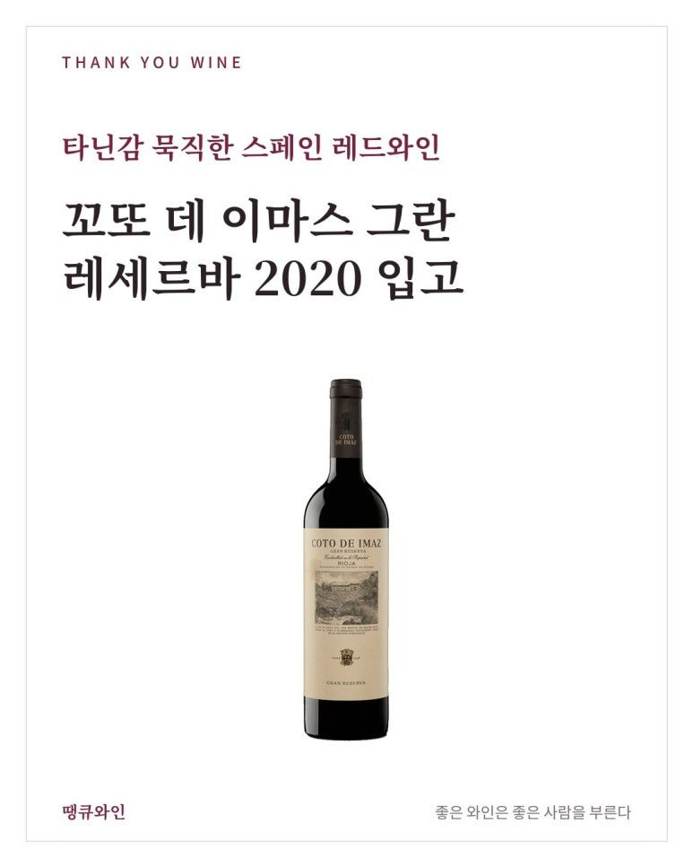
와인 소개타닌감 묵직한 스페인 레드와인
꼬또 데 이마스 그란 레세르바 2020 입고
꼬또 데 이마스 그란 레세르바 2020은 스페인 리오하의 엘 꼬또 데 리오하가 템프라니요 중심에 그라시아노를 소량 섞어 만든 장기 숙성형 풀바디 드라이 레드예요. 달큰한 레드보다 단단하고 구조감 있는 레드를 찾는 분
 모임·선물
모임·선물연말 모임 와인 준비
호텔 납품 와인부터 가성비 모임 와인, 와인잔까지 한 번에
땡큐와인은 송년회·회사 모임·동호회 정모·홈파티에 인원과 예산에 맞춘 와인 구성과 와인잔 대여를 준비해 드려요. 호텔 납품 와인과 가성비 좋은 모임용 와인으로 스파클링·화이트·레드를 짜고, 1인 1병과 2인 1병,
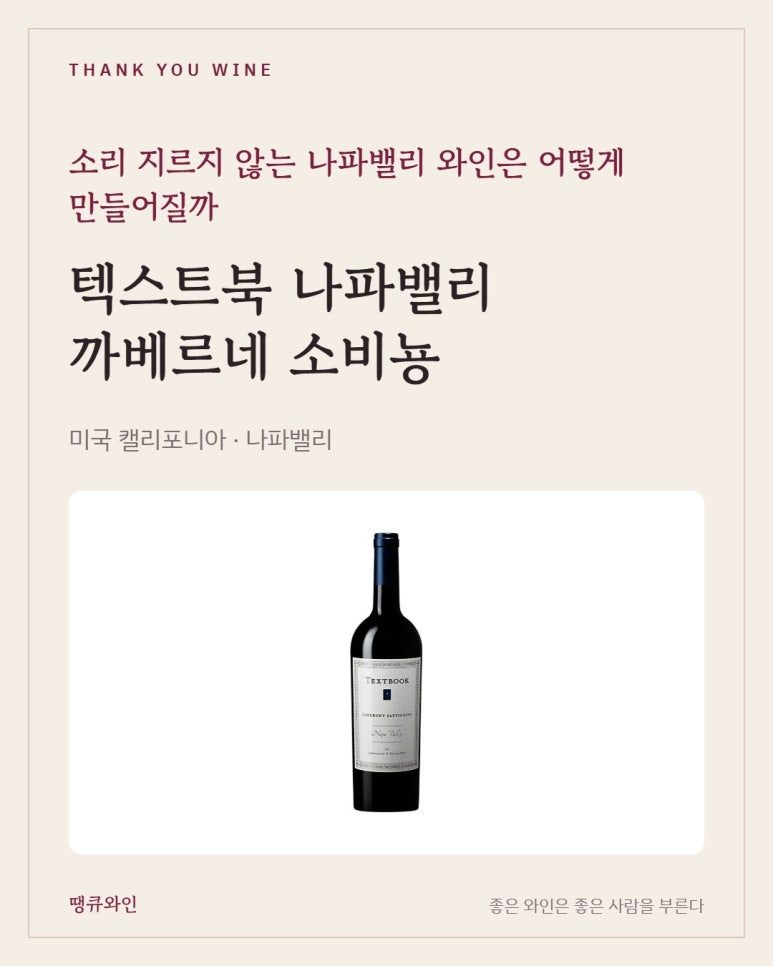
와인 소개텍스트북 까베르네 소비뇽
소리 지르지 않는 나파밸리 와인은 어떻게 만들어질까
텍스트북 까베르네 소비뇽은 2004년 조나단 페이와 수잔 페이 부부가 세운 나파밸리 와이너리의 레드로, 나파 평균보다 낮은 알코올과 과하지 않은 오크로 음식과 잘 어울리게 만들어요. 진한 나파 와인이 부담스러웠던 분
 모임·선물
모임·선물와인 빈티지 보는 법
선물용 와인, 좋은 해 고르는 그레이트 빈티지 총정리
선물용 와인은 좋은 해(그레이트 빈티지)를 고르면 이야기가 생겨요. 보르도는 2000·2005·2009·2010·2015·2016, 부르고뉴 레드는 2005·2010·2015·2019, 샴페인은 1996·2002·2
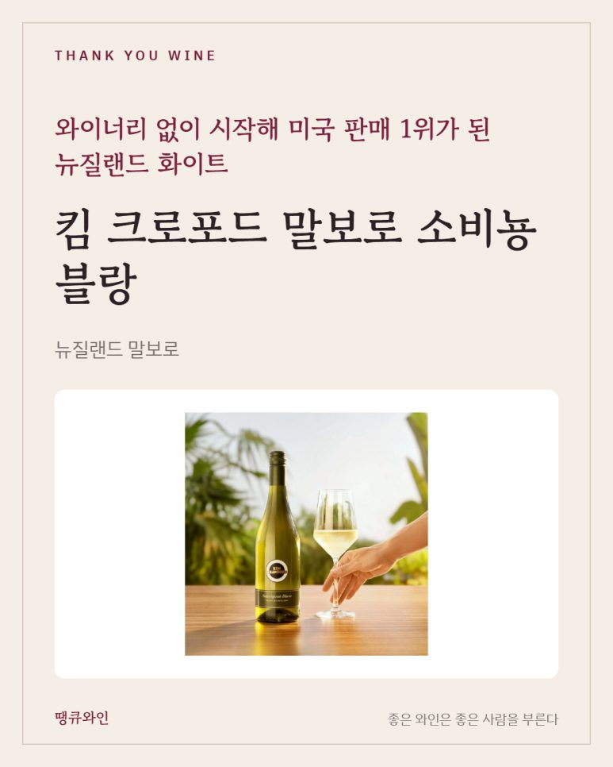
와인 소개킴 크로포드 소비뇽 블랑
와이너리 없이 시작해 미국 판매 1위가 된 뉴질랜드 화이트
킴 크로포드 소비뇽 블랑은 1996년 뉴질랜드 말보로에서 와이너리 없이 시작해 미국 판매 1위 뉴질랜드 와인이 된 소비뇽 블랑 100% 화이트예요. 오크 숙성 없이 신선하고 과실 향이 풍부해 상큼한 화이트와 해산물
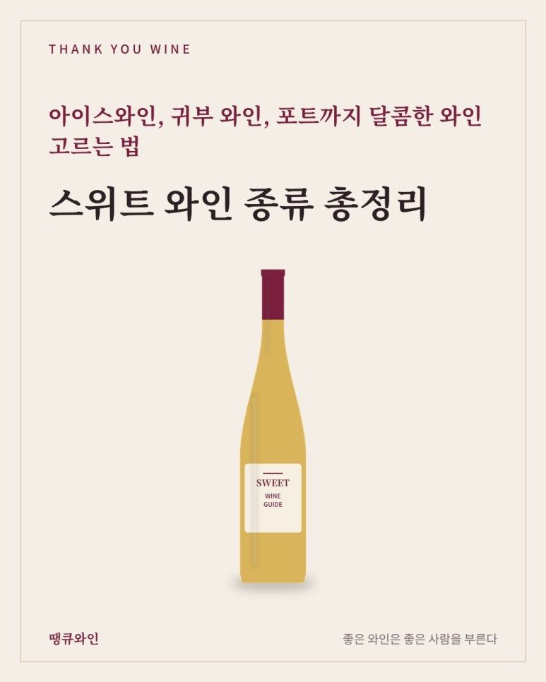
와인 소개스위트 와인 종류 총정리
아이스와인, 귀부 와인, 포트까지 달콤한 와인 고르는 법
스위트 와인은 만드는 방법에 따라 늦수확 와인, 귀부 와인, 아이스와인, 건조 포도 와인, 주정강화 와인(포트 등)으로 나뉘어요. 포도를 늦게 익히거나, 귀한 곰팡이로 당분을 농축하거나, 언 포도를 쓰거나, 말린 포
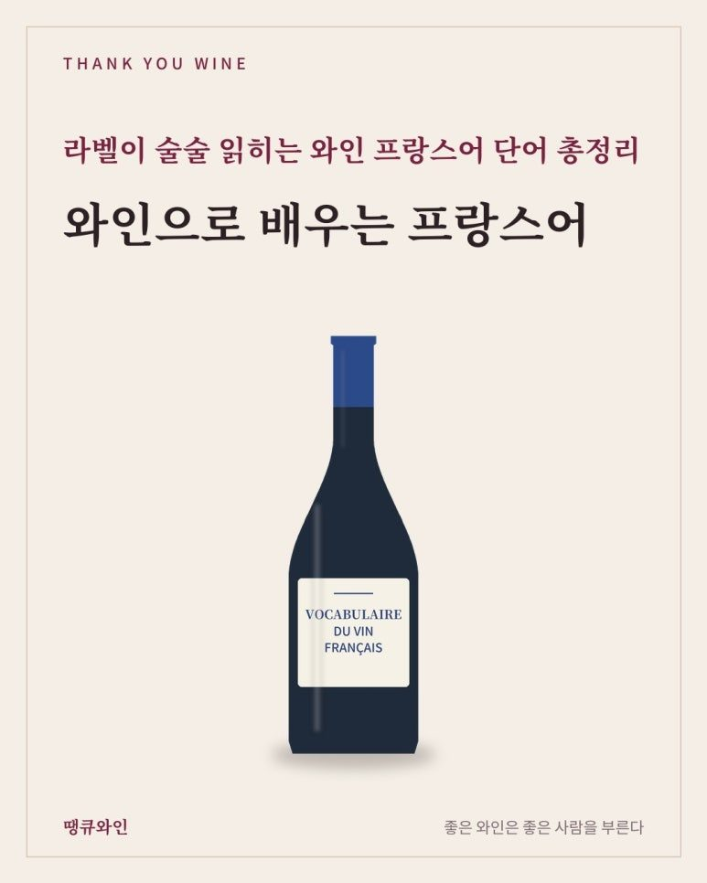
와인 소개와인으로 배우는 프랑스어
라벨이 술술 읽히는 와인 프랑스어 단어 총정리
와인 라벨의 프랑스어 단어 몇 개만 알아도 라벨이 읽혀요. Château(샤또)는 양조장, Cru(크뤼)는 등급이 매겨진 포도밭, Millésime(밀레짐)은 빈티지, Cuvée(뀌베)는 특별히 골라 만든 와인, S
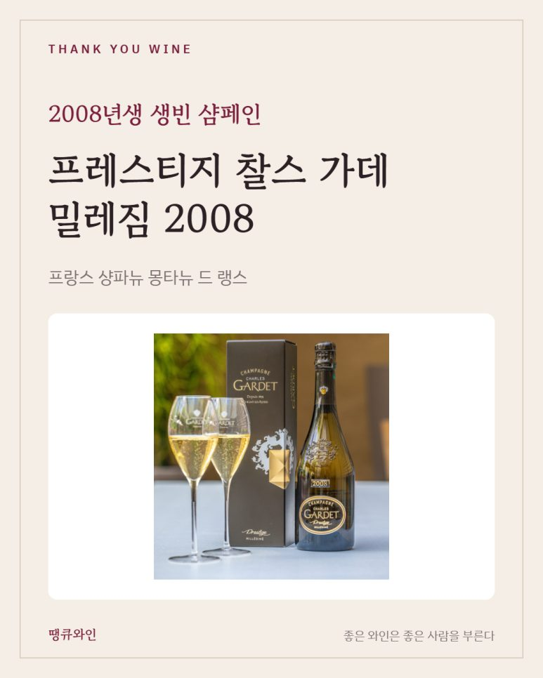
와인 소개2008년생 생빈 샴페인
프레스티지 찰스 가데 밀레짐 2008
프레스티지 찰스 가데 밀레짐 2008은 1895년 설립된 샴페인 가데가 몽타뉴 드 랭스 프르미에 크뤼 포도로 만든 빈티지 샴페인이에요(샤르도네 70%, 피노 누아 30%, 도사주 5g/L). 2024 샴페인 마스터즈
 모임·선물
모임·선물모임 와인 고르는 법
몇 병? 어떤 순서로? 송년회·홈파티 와인 실패 없이 고르기
모임 와인은 가벼운 자리 4명당 1병, 오래 앉는 자리 2명당 1병, 파티라면 1인당 1병을 기준으로 잡고, 스파클링으로 시작해 화이트, 레드 순서로 구성하면 실패가 적어요. 와인보다 음식을 먼저 정하고, 1병 가격
 와인 소개
와인 소개보르도 데일리 레드와인 추천
도멘 오뜨 브랑드 메를로 2022
도멘 오뜨 브랑드 메를로 2022는 프랑스 보르도 IGP 아틀란티크의 메를로 100% 레드로, 부드럽고 밸런스가 좋아 고기 요리와 편하게 곁들일 데일리 보르도 레드를 찾는 분께 맞아요.
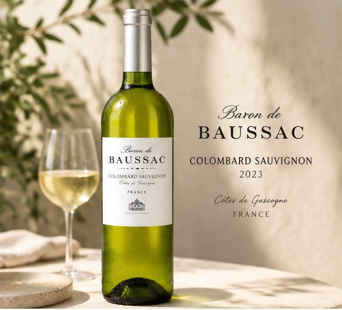
와인 소개가성비 데일리 화이트와인 추천
바롱 드 보삭 콜롬바드 소비뇽 2023
바롱 드 보삭 콜롬바드 소비뇽 2023은 프랑스 남서부 IGP 코트 드 가스코뉴에서 콜롬바드와 소비뇽 블랑으로 만든 가볍고 상큼한 드라이 화이트예요. 차갑게 편하게 마실 데일리 화이트를 찾는 분, 굴이나 해산물과 곁
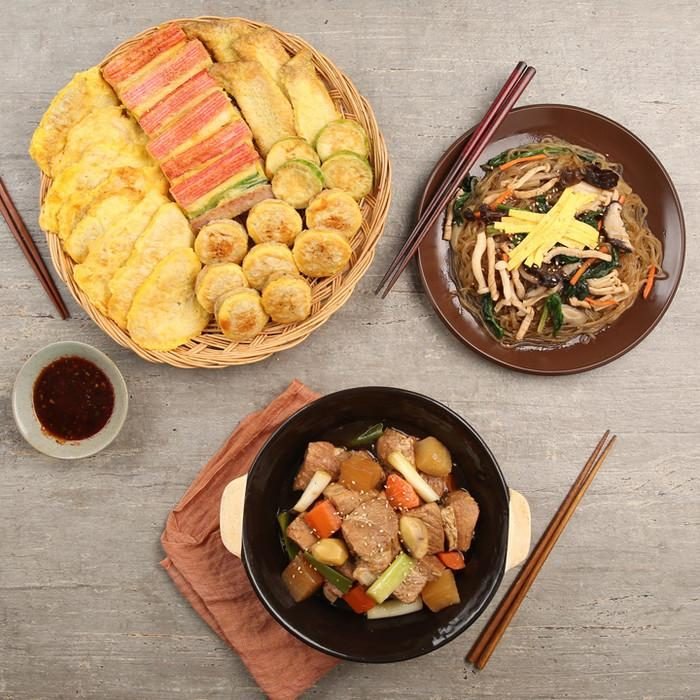
와인 소개추석 음식과 와인 페어링
전·갈비찜·잡채에 어울리는 와인 추천
추석이 되면 평소보다 식탁이 풍성해집니다.
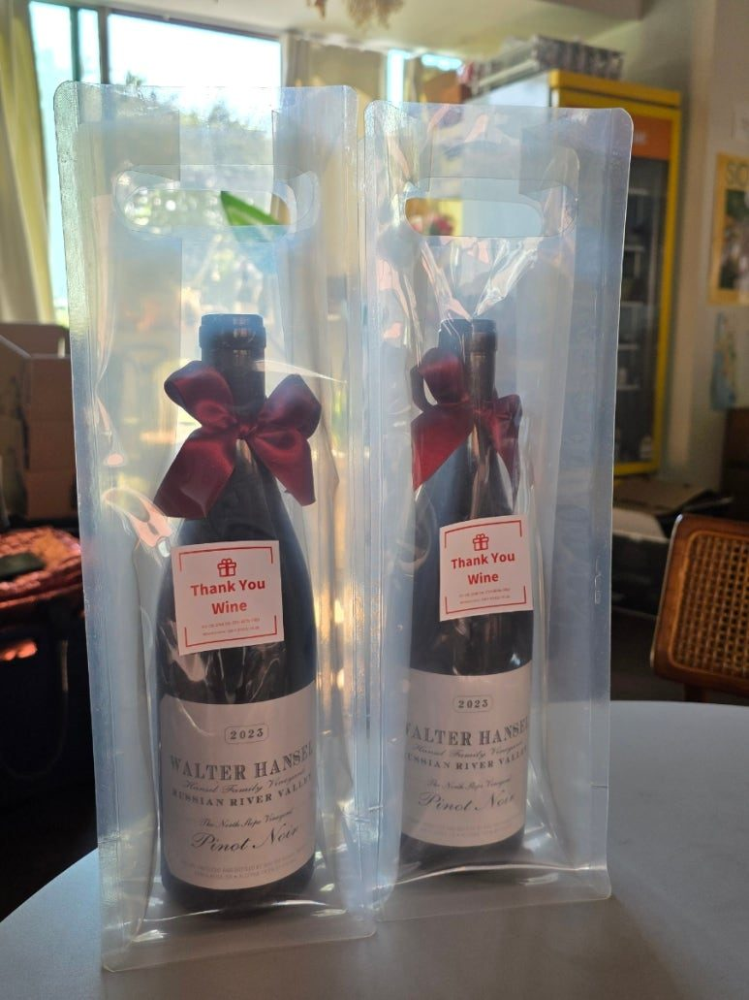
와인 소개와인 선물세트를 주문해주신 모든 분들께 감사드립니다.
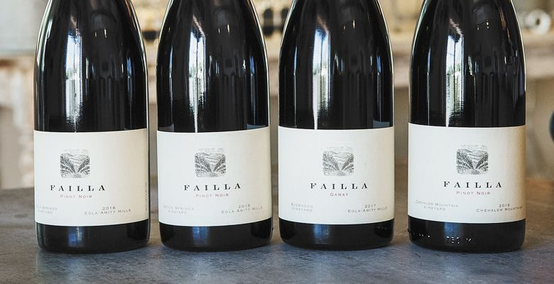
와인 소개파일라 샤도네이 & 피노 누아 2병 세트
소노마 코스트의 우아함을 담은 미국 와인 추천
미국 와인이라고 하면 진하고 풍성한 스타일을 먼저 떠올리는 분들이 많습니다.
와인 소개와인 보관법
오픈 후 보관 기간과 에어링 제대로 알아보기
와인을 한 병 샀는데 당장 다 마시지 못했거나,
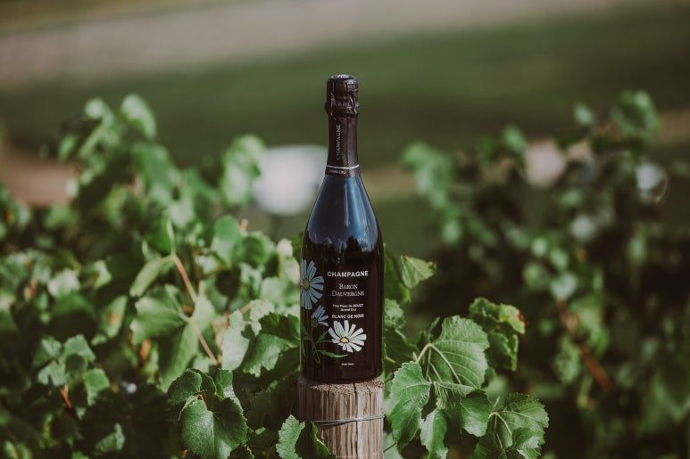
와인 소개바론 도베른 핀 플레르 그랑 크뤼 블랑 드 누아
부지 그랑 크뤼의 깊이를 담은 100% 피노 누아 샴페인
바론 도베른 핀 플레르는 1923년 부지(Bouzy)에서 시작한 가족 샴페인 하우스가 피노 누아 100%로 만든 그랑 크뤼 블랑 드 누아 브뤼 샴페인이에요. 과실감과 구조감이 함께 느껴져 피노 누아 샴페인의 깊이를
 와인 소개
와인 소개호주 가성비 레드와인 추천
말리 에스테이트 까베르네 소비뇽 & 쉬라즈 비교
호주 레드와인을 떠올리면 가장 먼저 생각나는 품종이 바로 쉬라즈(Shiraz)입니다.
 모임·선물
모임·선물추석 와인 선물세트 추천
한식과 잘 어울리는 2~3만원대 와인 9종 시음회 후기
추석이 다가오면서 추석 와인 선물세트를 준비하시는 분들이 부쩍 많아졌습니다.
모임·선물스파클링 와인 시음회 후기
까바·스푸만테·크레망부터 변리사님과 함께한 Q&A까지
좋은 사람들과 와인을 마시면서 평소 궁금했던 것까지 편하게 물어볼 수 있는 자리라면 이야기가 조금 달라집니다.
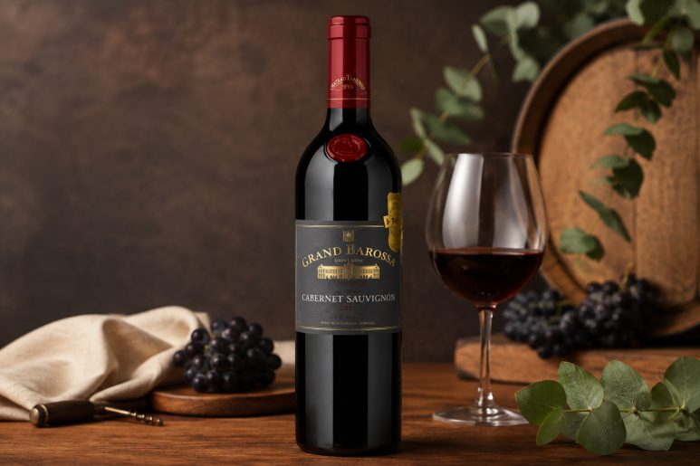
와인 소개다른 가능성을 보여주는 와인
샤토 타눈다 그랜드 바로사 까베르네 소비뇽 2020
그랜드 바로사 카베르네 소비뇽 2020은 1890년에 세워진 호주 바로사의 샤토 타눈다가 만드는 드라이 레드 와인이에요. 진한 검은 과실 향과 촘촘한 타닌이 있어 가을 고기 요리와 함께할 든든한 레드를 찾는 분께 맞
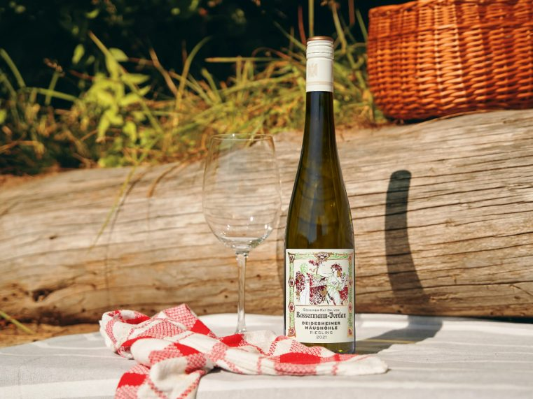
와인 소개바서만 요르단 다이데스하임 리슬링 파인헤르프
은은한 단맛과 산미가 만드는 독일 리슬링의 매력
바서만 요르단 다이데스하임 리슬링 파인헤르프는 독일 팔츠(Pfalz) 지역을 대표하는 유서 깊은 생산자 바서만 요르단의 리슬링으로, 은은한 잔당감과 리슬링 특유의 또렷한 산미가 균형을 이루는 스타일입니다.
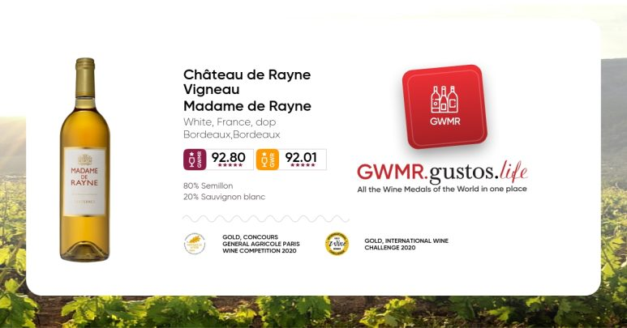
와인 소개마담 드 레인 소테른 와인 추천
샤토 드 레인 비뇨의 우아한 세컨드 와인
소테른 와인이라고 하면 많은 분들이 가장 먼저 떠올리는 것이 바로 달콤하고 진한 디저트 와인입니다.
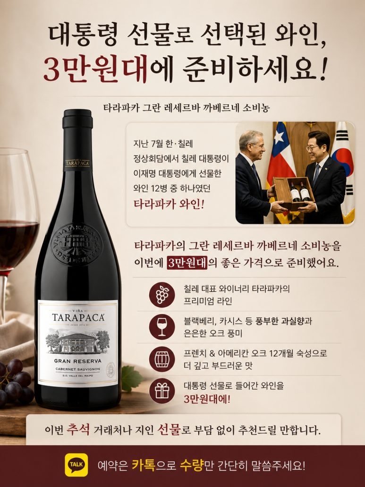
모임·선물대통령의 선물로 선택된 칠레 와인
타라파카 그란 레세르바 까베르네 소비뇽
타라파카 그랑 리제르바 까베르네 소비뇽 2023은 칠레 마이포 밸리에서 만든 까베르네 소비뇽 레드로, 고기 굽는 날 부담 없이 따면서도 맛은 확실한 와인이에요.
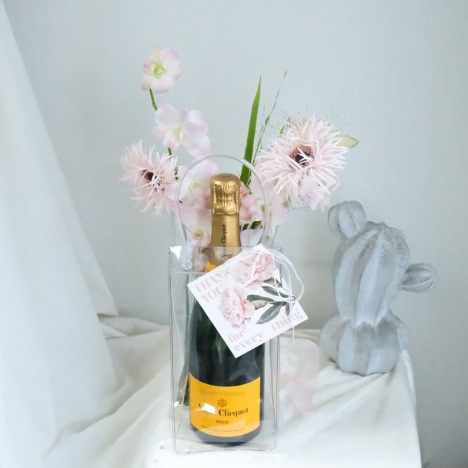
와인 소개땡큐와인 × 치유플라워
와인에 꽃을 더하는 가장 특별한 방법 🌷🍾
조금 더 특별한 마음까지 함께 전하고 싶은 날이 있죠.
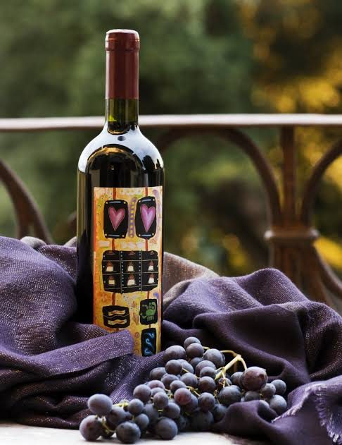
와인 소개테누타 일 코르노 미나에모로
토스카나의 특별한 러브 스토리를 담은 레드와인
일 코르노 미나에모로 2017은 피렌체 남쪽 테누타 일 코르노가 산지오베제 50%와 콜로리노 50%로 만든 토스카나 IGT 레드예요. 짙은 루비색에 부드럽고 촘촘한 타닌이라 키안티와는 조금 다른 토스카나 레드를 경험
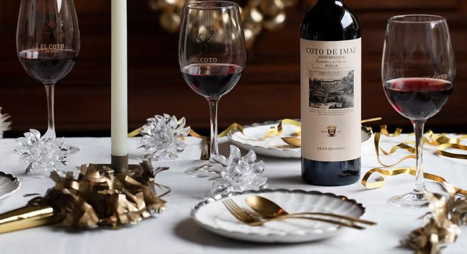
와인 소개화덕피자 와인 추천
피자와 잘 어울리는 레드와인, 엘 꼬또 이마스 그란 레세르바
피자에는 가볍고 산뜻한 와인만 잘 어울린다고 생각하기 쉽지만, 토마토소스와 치즈, 살라미나 프로슈토 같은 육류 토핑이 올라간 화덕피자라면 숙성감이 있는 레드와인도 상당히 좋은 선택이 될 수 있습니다.
 와인 소개
와인 소개프렌치 블룸 르 블랑
샴페인 대신 즐기는 프리미엄 논알코올 스파클링
술을 마시지 않는 사람도 특별한 자리에서 함께 잔을 들 수 있을까?
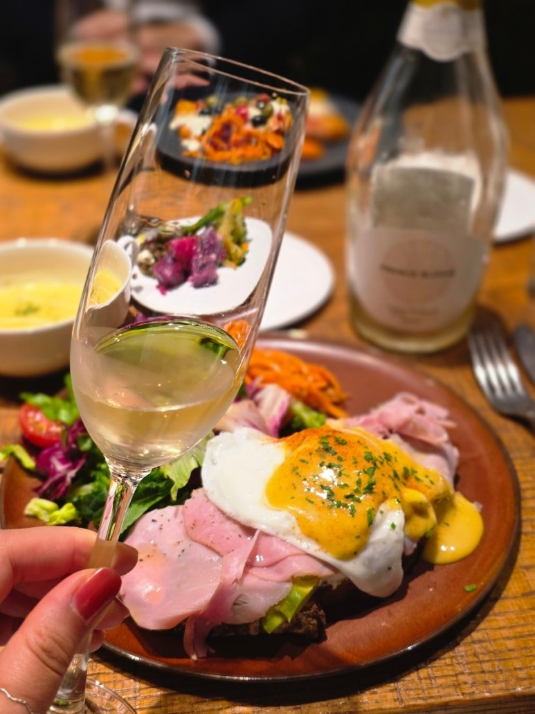
와인 소개프렌치 블룸 르 로제
샴페인 대신 즐기는 우아한 논알코올 와인
와인을 좋아하지만 오늘은 술을 마시고 싶지 않은 날,
모임·선물2026 추석 와인 선물세트 추천
기업·거래처·임직원 명절 선물 맞춤 구성
추석이 다가오면서 추석 와인 선물세트, 기업 와인 선물, 거래처 선물, 임직원 명절 선물을 준비하는 분들의 문의가 크게 늘고 있습니다.
와인 소개파이퍼 하이직 & 마리 드메 샴페인 특별 세트
특별한 날을 위한 샴페인을 찾고 계신가요?
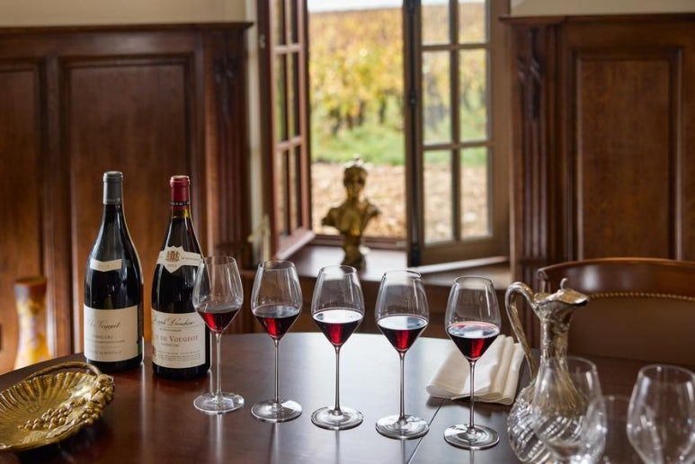
와인 소개부르고뉴 핵심 생산자 리스트
한정 수량 선착순 마감
이번 라인업은 와인 애호가분들이 항상 먼저 찾으시는
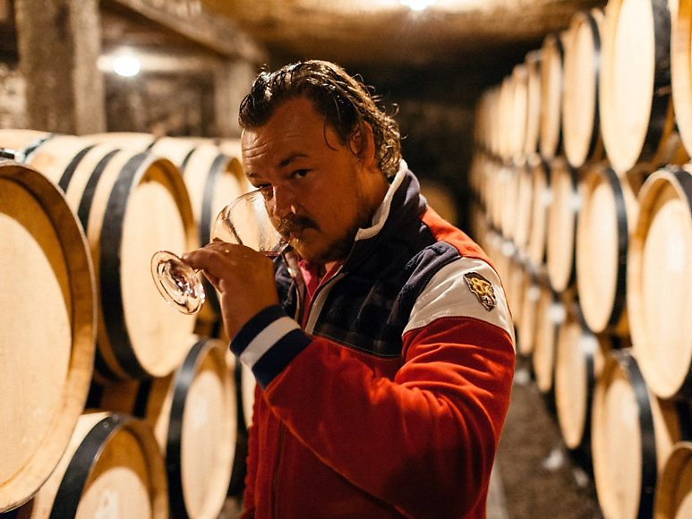
와인 소개장테팡시오 와인 추천 BEST
예산별로 고르는 부르고뉴
부르고뉴를 좋아하는 분들이라면 한 번쯤 이런 고민을 해보셨을 것입니다.
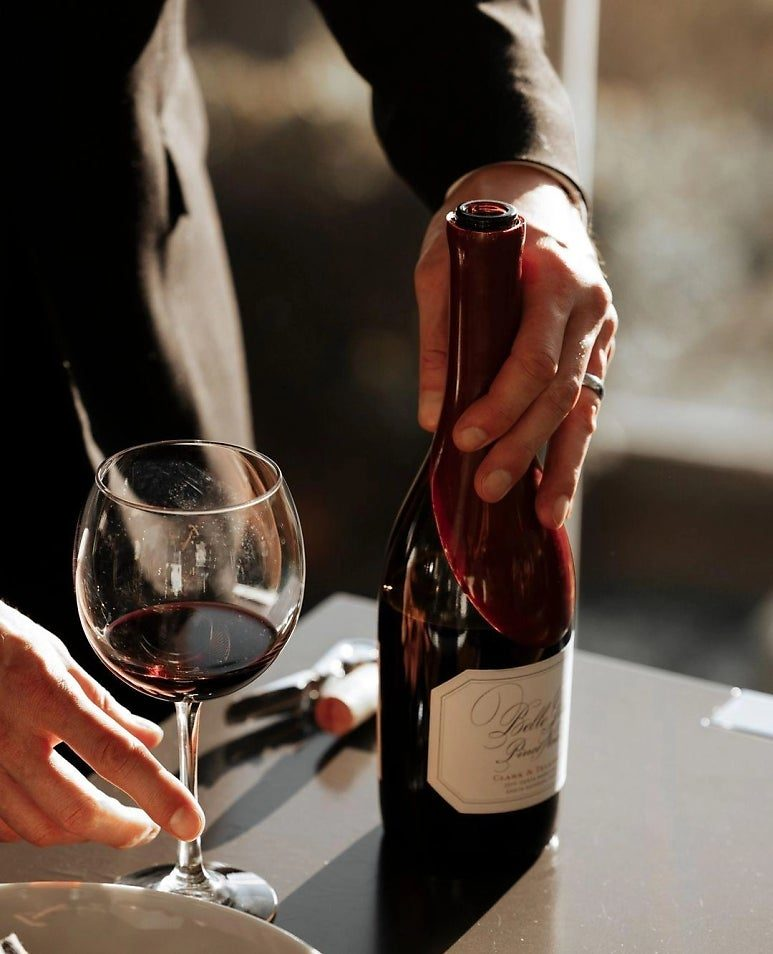
와인 소개벨레 그로스 클락 앤 텔레폰 피노 누아
피노 누아라고 하면 많은 분들이 부르고뉴의 우아하고 섬세한 스타일을 먼저 떠올립니다. 하지만 피노 누아는 산지에 따라 전혀 다른 개성을 보여주는 품종이기도 합니다.
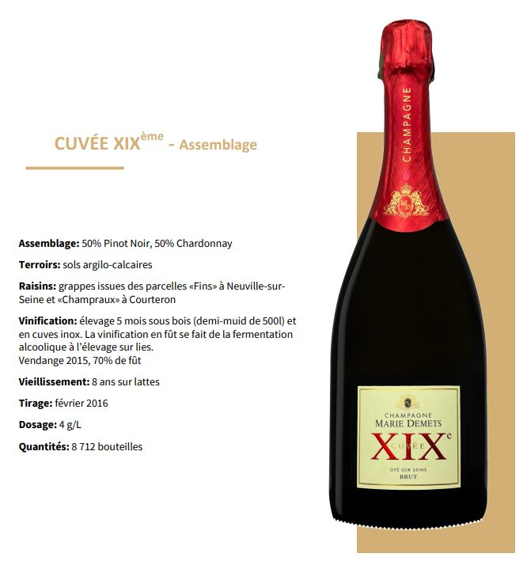
와인 소개19세기 샴페인의 황금기를 담은 부티크 샴페인
마리 드메 뀌베 19세기 시에클
마리 드메 뀌베 19세기 시에클(Marie Demets Cuvée 19ème Siècle)은 이름처럼 19세기 프랑스 샴페인의 황금기를 오마주한 샴페인입니다. 대형 메종에서는 느끼기 어려운 부티크 샴페인만의 섬세함과
 와인 이야기
와인 이야기마요르카의 와인 역사를 바꾼 와이너리, 아니마 네그라
1994년 설립된 아니마 네그라(Ànima Negra)는 스페인 발레아레스 제도 마요르카 섬의 와인 역사를 새롭게 쓴 와이너리입니다.
 와인 이야기
와인 이야기오래된 포도나무가 만드는 특별한 차이, 도멘 조나단 세갱 꼬뜨 드 쇼슈아 피노누아 VV 2024
조나단 세갱 부르고뉴 피노누아 VV 2024는 부르고뉴의 숨은 산지 꾸슈아(Couchois)에서 오래된 포도나무(비에유 비뉴)로 만든 드라이 레드예요. 부르고뉴 피노 누아를 부담 없이 데일리로 즐기고 싶은 분께 추천
와인 소개와인 구매 및 배송 문의 전, 꼭 미리 확인해 주세요!
모임·선물스파클링 와인 시음회 & 16년 차 변리사와의 Q&A
더위와 업무에 지친 금요일 저녁, 가슴 속까지 시원해지는 스파클링 와인 한 잔이 생각나는 계절입니다.
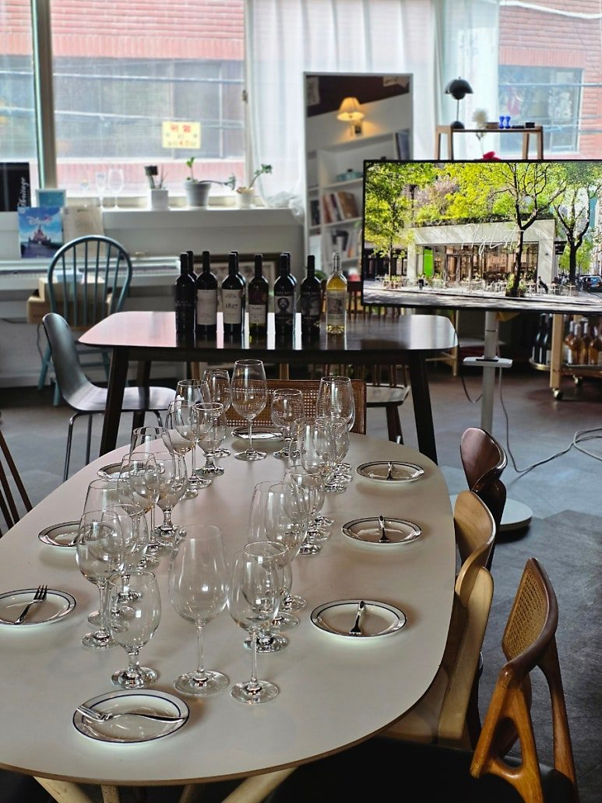
와인 소개몰도바를 마시며 세계 와인을 배우다🍷
사실 '시음회'라는 한 단어로 표현하기에는 조금 아쉬운, 너무나 풍성한 시간이었어요!
 와인 이야기
와인 이야기데일리부터 특별한 날까지! 꽉 채운 홈바 패키지 추천
데일리 화이트 2병 + 만능 스파클링 1병 + 가성비 끝판왕 데일리 레드 1병 + 콜키지 모임 치트키 프랑스 레드 1병 + 성공을 부르는 선물용 와인 1병까지!
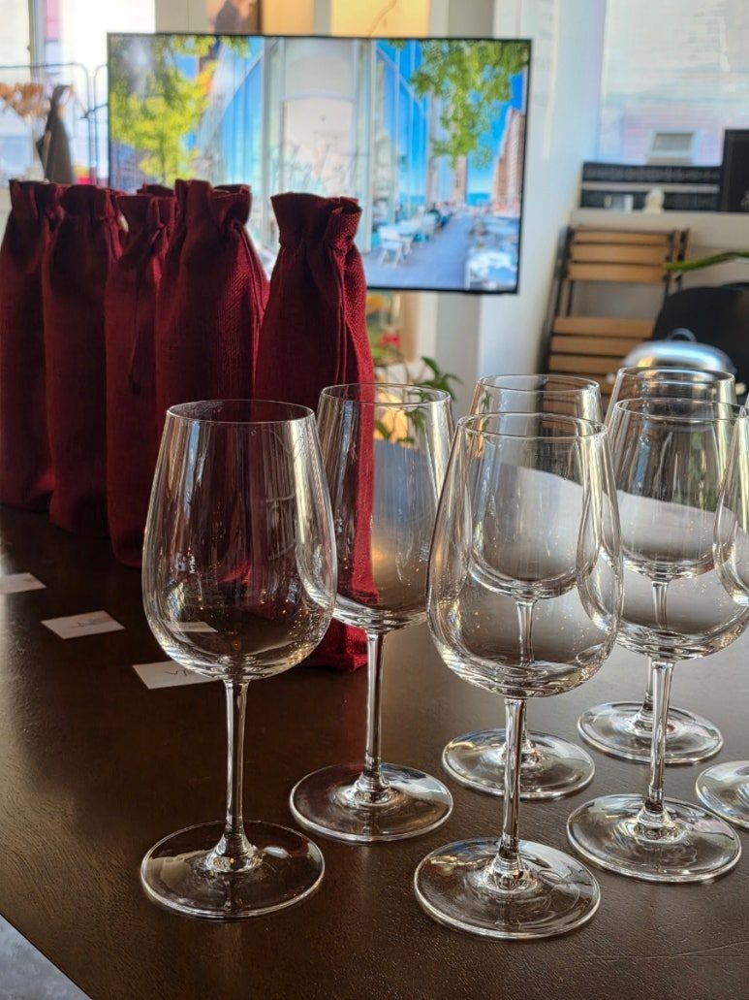
모임·선물땡큐와인 멤버를 위한 와인 모임 대관 오픈 안내
와인 모임을 준비하다 보면 늘 마주치는 고민이 있습니다.
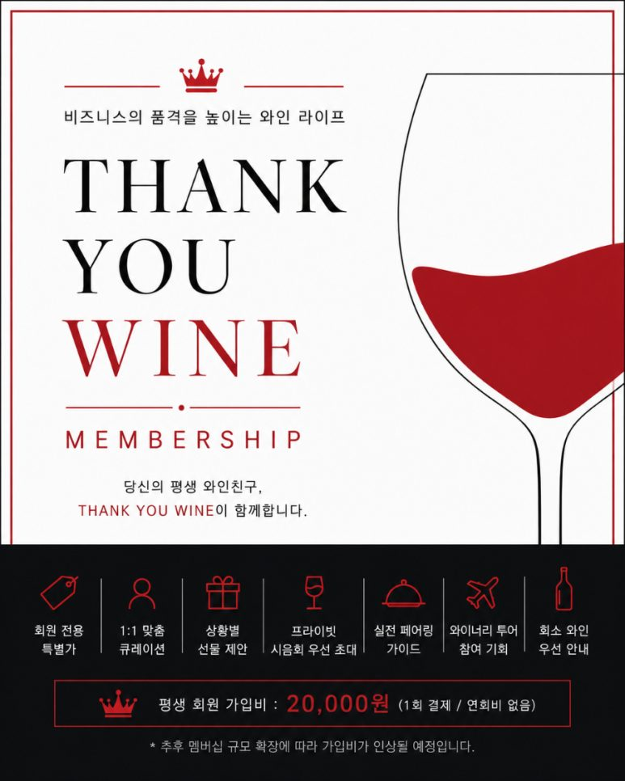
와인 소개당신 곁에 가장 가까운 와인 전문가 THANK YOU WINE Membership
"이 음식에는 어떤 와인이 잘 어울릴까요?"
모임·선물와인 선물, 가격보다 중요한 3가지
선물하기에 와인만큼 좋은 것도 드물지만, 와인만큼 고르기 어려운 선물도 없습니다.
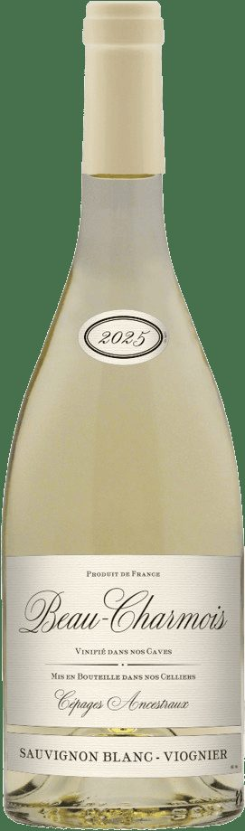
와인 소개프랑스 남부의 화사한 햇살을 머금은 한 잔, 부 샤르무아 소비뇽블랑-비오니에
무더운 더위가 이어지는 요즘 같은 날씨에는 갈증을 시원하게 해소해 주면서도 코끝을 화사하게 자극하는 매력적인 화이트 와인이 간절하게 생각나곤 하죠. 수많은 와인들 사이에서 진정한 보석을 찾아내기 위해 끊임없이 탐구하
 와인 소개
와인 소개이탈리아 품종 탐구 캄피 데안테라 아레 피아노
여름이 깊어질수록 청량하고 시원한 한 잔이 더욱 간절해지는 계절입니다. 무더운 열기를 식혀줄 최고의 와인을 기다리셨던 분들께 아주 기쁜 소식을 전해드려요. 매년 이맘때면 어김없이 찾으시는 분들이 많아, 올해도 발 빠
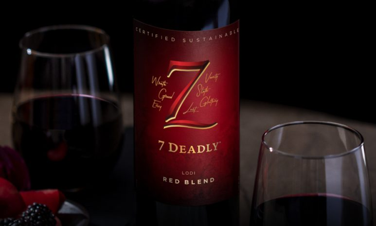
와인 이야기미국 와인 추천 세븐 데들리 레드 2018
세븐 데들리 레드는 미국 캘리포니아 로다이의 필립스 형제가 시작한 브랜드의 레드 블렌드로, 진판델·쁘띠 시라·까베르네 소비뇽·메를로를 섞어 과실감이 풍성한 미디엄~풀바디예요. 핼러윈이나 바비큐처럼 편하게 진한 미국
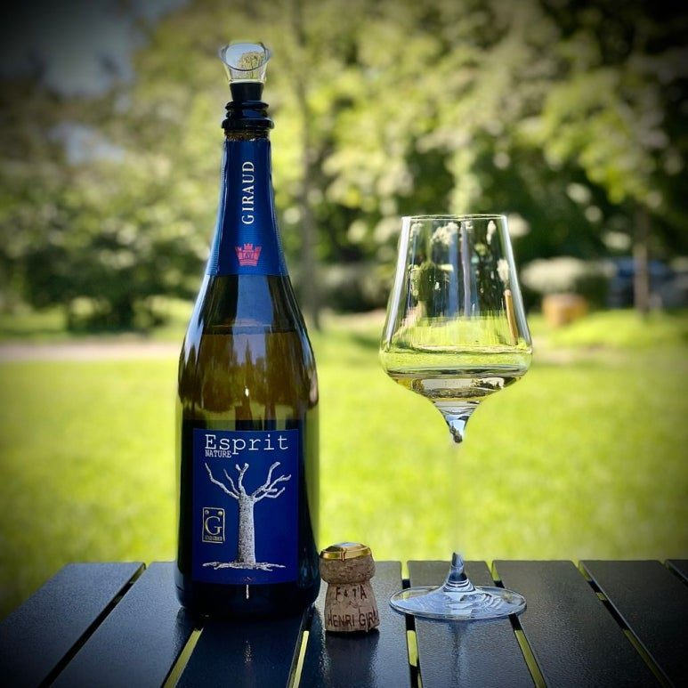
와인 소개세계 평론가들이 극찬한 명품 샴페인의 정석, 앙리 지로 에스쁘리 나뚜르 브뤼
바쁘고 지친 일상 속에서 잠시나마 숨을 돌리고 완벽한 리프레시를 하고 싶을 때 다들 어떤 와인을 가장 먼저 찾으시나요? 특히 축하할 일이 있거나 소중한 사람들과 모이는 특별한 자리에는 잔 속에서 미세하고 정교한 기포
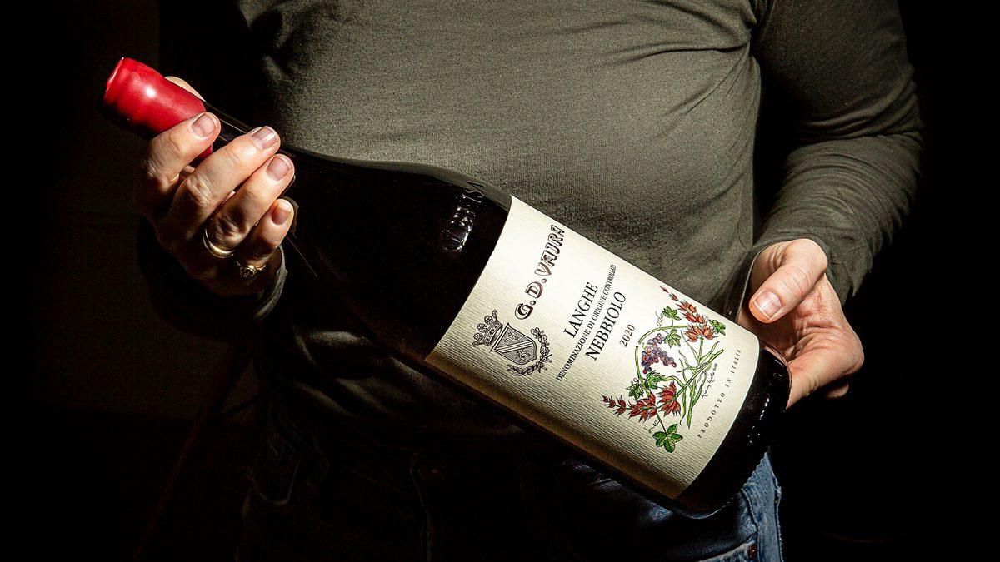
와인 이야기테이블 위의 압도적인 존재감, 매그넘 와인을 선택해야 하는 특별한 이유
와인샵이나 멋진 레스토랑에서 일반 와인병보다 확연히 거대하고 묵직한 존재감을 뽐내는 와인병을 보신 적이 있으실 텐데요. 바로 일반 와인병인 750ml의 정확히 두 배 용량을 자랑하는 1.5L 크기의 매그넘(Magnu
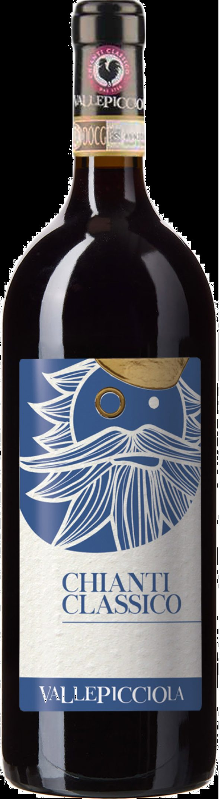
와인 소개이탈리아 토스카나의 붉은 열정, 발레피치올라 끼안티 클라시코 매그넘
선선한 바람이 부는 저녁이나 소중한 사람들과 맛있는 육류 요리를 즐기는 자리에서 가장 먼저 생각나는 와인은 단연 깊은 풍미를 가진 레드 와인입니다. 전 세계적으로 정말 수많은 종류의 레드 와인이 많은 애호가들의 사랑
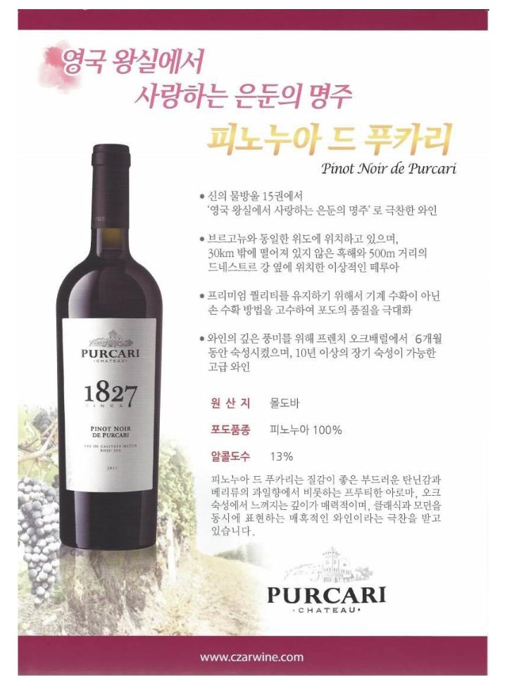
모임·선물몰도바 와인 시음회 상세 리스트
푸카리는 Decanter, Mundus Vini, Concours Mondial de Bruxelles 등 세계 최고 권위의 대회에서 수백 개의 메달을 휩쓸며 최근 '세계에서 가장 많은 상을 받은 와이너리 Top 3
모임·선물박찬준 대표님과 함께하는 몰도바 와인 멤버십 Only 시음회
아마 많은 분들이 처음에는 이렇게 생각하실 거예요.
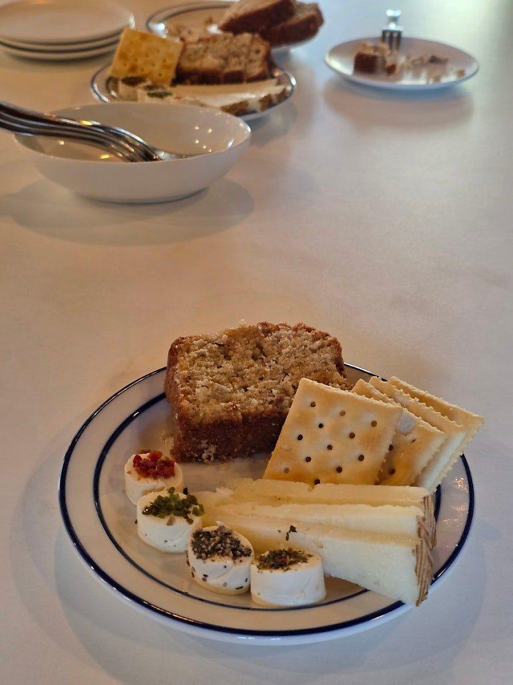
모임·선물데일리와인 블라인드 테이스팅 멤버십 Only 시음회 후기
지난주 수요일에 아주 가볍게 데일리 와인 블라인드 테이스팅을 했는데요,
 와인 소개
와인 소개오퍼스 원(Opus One), 왜 모두가 한 번쯤 마셔보고 싶어 할까?
오퍼스원 2022는 보르도와 나파 밸리가 함께 만든 나파 밸리 오크빌의 까베르네 소비뇽 중심 보르도 스타일 블렌드예요. 프렌치 오크에서 숙성한 풀바디 레드로, 인생의 특별한 순간에 여는 와인으로 많이 선택돼요.
 와인 소개
와인 소개생테밀리옹 그랑 크뤼, 왜 와인을 좋아하는 사람들이 찾을까?
와인을 마시다 보면 한 번쯤은 만나게 되는 이름이 있습니다.
와인 이야기와인 역사를 바꾼 한 잔의 기적: 샤또 몬탈레나와 파리의 심판
혹시 와인에 대해 잘 모르지만, 뭔가 특별한 스토리가 담긴 와인을 마셔보고 싶다는 생각 해보신 적 있으신가요? 와인의 세계는 알면 알수록 흥미로운 이야기들로 가득한데요. 오늘은 그중에서도 전 세계 와인 지도를 뒤흔든
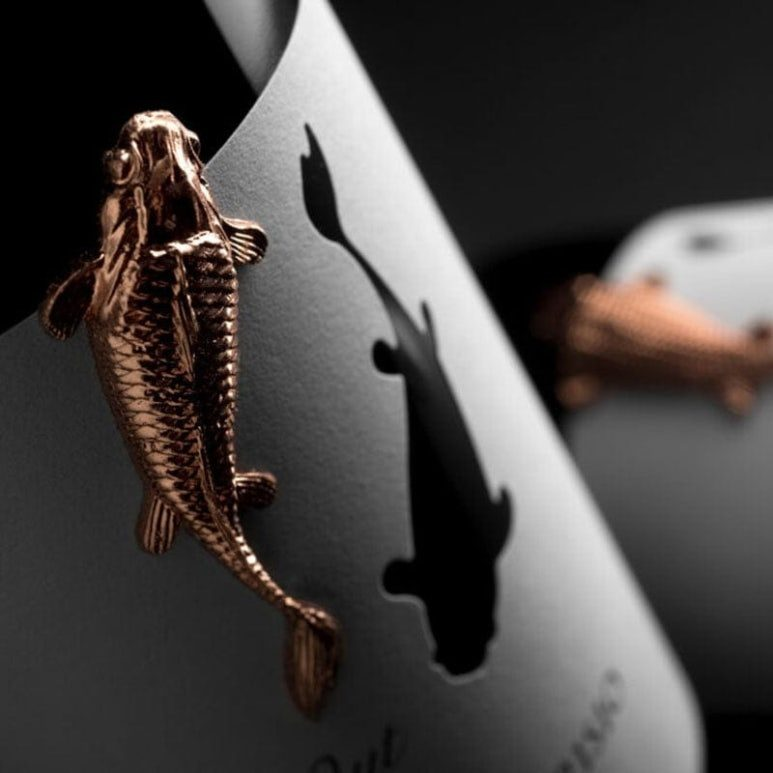
와인 이야기건배사를 위한 와인 추천 콜레프리시오 인앤아웃'20
달력을 보니 어느새 6월입니다. 1월에 세웠던 계획들을 돌아보면, 잘 된 것도 있고 아직 진행 중인 것도 있고, 생각지도 못한 방향으로 흘러간 것도 있습니다. 그게 삶이라는 걸 알면서도, 상반기의 끝에 서면 묘하게
와인 소개제로페이 서울사랑상품권 땡큐와인 이용 안내
서울사랑상품권은 서울시에서 발행하는 지역화폐로, 구매 시 할인 혜택을 제공하여 많은 시민분들께 사랑받고 있습니다. 이제 땡큐와인 매장에서도 이 서울사랑상품권을 이용하여 와인을 구매하실 수 있습니다.
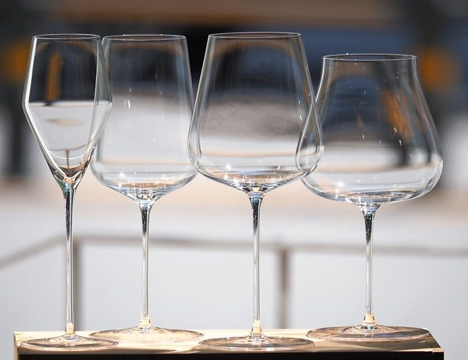
와인 이야기와인잔 추천 하이엔드 퀄리티의 수제 핸드블로우 크리스탈 글라스
오늘은 보기만 해도 가슴이 설레는, 그리고 한 모금의 와인을 마셔도 그 가치를 몇 단계는 더 올려줄 프리미엄 와인 글라스 컬렉션을 소개해 드리려고 합니다.
 와인 이야기
와인 이야기이탈리아 스파클링 추천 세디치 브륏 스푸만테
바쁘고 지친 일상 속에서 잠시나마 숨을 돌리고 청량한 리프레시를 하고 싶을 때 다들 어떤 와인을 가장 먼저 찾으시나요? 특히 요즘처럼 더운 날씨에는 땀을 식혀줄 시원한 음료가 간절해지는데, 저는 잔 속에서 뽀글뽀글
 와인 이야기
와인 이야기독일 스파클링 젝트 추천 크랙 블랑 드 블랑 브뤼 나뛰르 2022
전 세계 스파클링 와인 애호가들의 시선이 프랑스 샴페인을 넘어 독일의 프리미엄 스파클링 와인인 젝트(Sekt)로 향하고 있습니다. 오늘 소개할 와인은 독일 팔츠 지역에서 장인 정신으로 완성한 최고의 스파클링 와인,
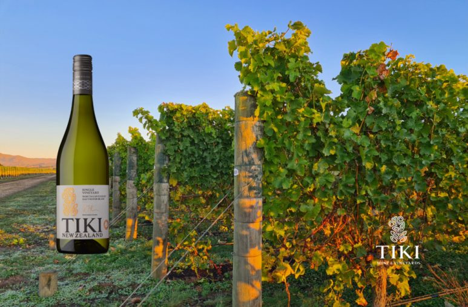
와인 이야기뉴질랜드 와인 추천 티키 소비뇽블랑, 샤도네이, 리슬링
뉴질랜드 마오리족의 헤리티지를 품고 탄생한 티키(Tiki) 와이너리는 지구상에서 가장 청정한 와인 산지 중 하나인 뉴질랜드의 테루아를 정직하게 표현하는 생산자입니다. 와이너리의 이름인 티키는 마오리 신화에서 인류를
 와인 소개
와인 소개반전의 우아함을 보여준 미국 피노 누아, 월터 한셀 노스 슬로프 피노 누아 2023
미국 캘리포니아 소노마 프리미엄 피노 누아의 대명사이자 애호가들 사이에서 늘 높은 인기를 자랑하는 월터 한셀 와이너리의 상징적인 싱글 빈야드 와인입니다. 캘리포니아 No.1 자동차 딜러 그룹인 핸젤 오토(Hansel
 와인 이야기
와인 이야기입문용 부르고뉴 추천 도멘 데 테레 정띠에 부르고뉴 레드 & 화이트
도멘 데 테레 정띠에는 부르고뉴 남부 마코네 지역 아제 마을에 자리한 전통 있는 가족 경영 와이너리입니다. 1921년부터 이어져 온 이 도멘은 과거 클뤼니 수도원 소유였던 포도밭을 지속가능한 방식으로 경작하며, 섬세
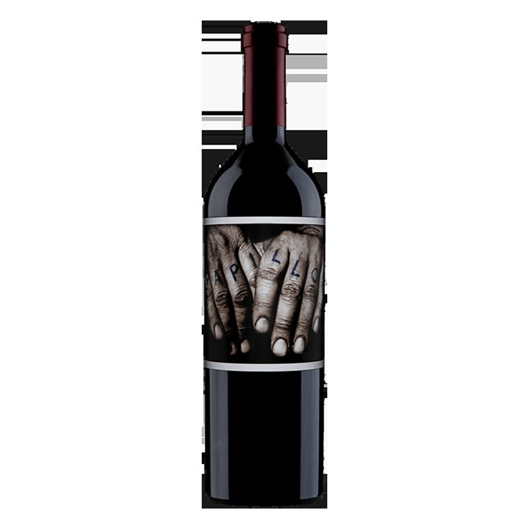
모임·선물오린 스위프트 파피용 나파밸리 와인 선물 추천
와인을 고를 때 가장 어려운 순간이 있습니다. 받는 사람이 와인을 잘 아는 경우입니다. 평범한 선택은 오히려 실례가 될 것 같고, 그렇다고 너무 낯선 와인을 가져가기도 부담스럽습니다. 오린 스위프트 파피용은 바로 그
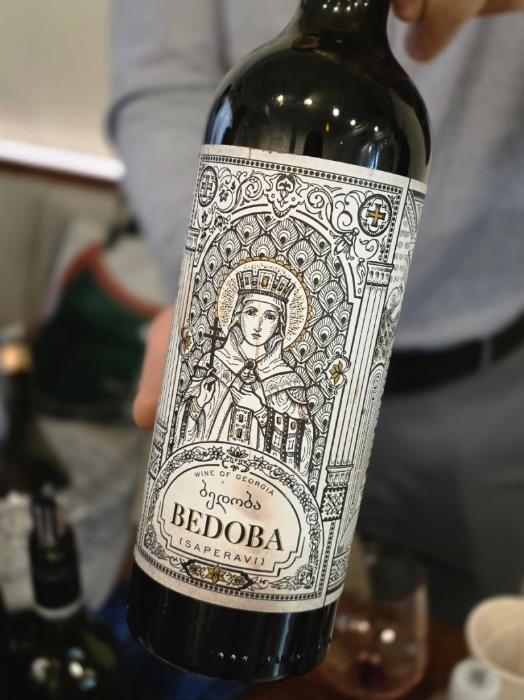
와인 이야기조지아와인 입문 추천 베도바 사페라비
인류 와인의 발상지이자 8,000년의 역사를 간직한 조지아(Georgia)는 최근 전 세계 와인 애호가들 사이에서 가장 트렌디하게 떠오르는 생산지입니다.
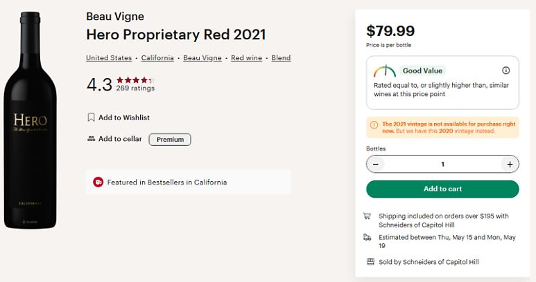
와인 이야기미국 와인 추천 보비뉴 히어로 2023
나파 밸리의 단단한 힘과 소노마 밸리의 세련된 우아함이 한 병에 담긴다면 어떨까요? 오늘 소개할 와인은 이름부터 압도적인 존재감을 자랑하는 캘리포니아의 숨은 명작, 히어로 2023입니다.
와인 이야기샴페인 대용 추천 루아르 샤또 드 꼬쎄 크레망
– Chateau de Cosse, Cremant de Loire Brut
와인 이야기칠레 와인 추천 부숑 블락 리제르바 까르미네르
칠레 와인의 자부심이자, 잃어버린 품종에서 보석으로 거듭난 부숑 블락 리제르바 까르미네르 (Bouchon, Block Reserva Carmenere)는 칠레의 전통 있는 와이너리 '부숑(Bouchon)'이 자신들의
모임·선물[가정의 달 특선] 어버이날 선물 추천 칠레 와인 도나 베르나다
5월은 감사의 달입니다. 소중한 어머니, 그리고 늘 곁에서 힘이 되어주는 아내에게 평소 전하지 못했던 진심을 전하기 위해 많은 분이 특별한 선물을 고민하시죠. 오늘 소개할 와인은 그 어떤 선물보다 깊은 울림과 감동적
모임·선물골프모임 선물 추천 1865 슈퍼픽션 콜라보 에디션
국민 와인으로 불리는 1865가 크리에이티브 스튜디오 슈퍼픽션과 협업하여 스페셜 에디션을 선보였습니다. 이번 협업은 1865가 가진 전통적인 신뢰도에 슈퍼픽션 특유의 유쾌한 상상력을 더해 와인을 단순한 음료 이상의
모임·선물선물하기 좋은 와인 추천 쉐 되브르 마스터피스 컬렉션
와인을 즐기는 것은 단순히 맛을 음미하는 것을 넘어, 그 속에 담긴 테루아와 생산자의 철학, 그리고 예술적 영감을 공유하는 과정입니다. 오늘 소개해 드릴 쉐 되브르(Chai d'Oeuvre) 시리즈는 프랑스 남부 랑
와인 소개사러스 쉬라즈
Sarus Shiraz
호주의 뜨거운 태양과 서늘한 밤 기후가 빚어낸 개성 있는 쉬라즈.
 와인 소개
와인 소개시간의 가치를 담은 레드와인
와인 명상 큐레이션 2종
기업 담당자를 대상으로 하는 '와인 명상'은 단순히 와인을 마시는 행위를 넘어, 와인이 가진 서사와 자신의 비즈니스적 가치를 연결하는 과정이 중요합니다.
 와인 소개
와인 소개세월이 빚어낸 50년 고목의 깊은 울림
이그나시오 마린, 올드 바인 가르나차 | Ignacio Marín, Old Vine Garnacha
스페인 아라곤(Aragón) 지역의 뜨거운 열정과 고목의 깊은 풍미를 담은 이그나시오 마린, 올드 바인 가르나차 (Ignacio Marín, Old Vine Garnacha) 정보를 정리해 드립니다.
모임·선물프라이빗 행사 전용: 고품격 케이터링 와인과 프리미엄 기프트 구성 안내
품격 있는 모임의 완성은 초대된 귀빈들의 취향을 충족시키는 '와인'에 있습니다. 전문직 종사자 및 의사 커뮤니티 행사를 위해 엄선한 [프리미엄 기프트 & 케이터링 패키지]를 소개합니다.
와인 소개페카비, 샤도네이 2023
Peccavi Chardonnay 2023
호주 마가렛 리버(Margaret River)의 숨은 보석이라 불리는 페카비, 샤도네이 2023 (Peccavi Chardonnay 2023).
와인 소개잘레오 로사도 2021
Zaleo Rosado 2021
스페인 에스트레마두라 지역의 신선함을 담은 잘레오 로사도 2021 (Zaleo Rosado 2021)는 '비냐올리바(Viñaoliva)'에서 생산하며, 지역 토착 품종의 잠재력을 최대한 끌어올려 합리적인 가격대에 우
모임·선물소셜링 파티 모임장을 위한 [매치메이커 박스]
소셜링 와인 큐레이션 1
🍷 소셜링 모임장이라면 꼭 알아야 할 와인 준비 꿀팁
모임·선물레드와인 러버를 위한 프리미엄 레드 박스
가족 행사를 빛내줄 완벽한 와인 라인업🍷
다가오는 가족 행사를 위해 와인 디렉팅을 의뢰해주신, 평소 진한 레드와인을 즐기시는 손님의 취향을 반영하면서도 모임의 격을 높여줄 특별한 라인업을 구성했습니다. 축하의 시작부터 깊은 여운의 마무리까지, 와인 디렉터가
와인 소개주소를 몰라도 편리하게, 땡큐와인 '스마트 주소 확인' 서비스 💌
소중한 분께 와인을 선물하고 싶지만, "지금 계신 곳 주소가 어떻게 되세요?"라고 매번 묻기 미안하거나 번거로우셨던 경험 있으시죠?
모임·선물어머니, 아내를 위한 와인 선물
루이스 펠리페 에드워드(LFE), 도나 베르나다 2020 (Dona Bernarda 2020
어머니께 또는 아내에게 선물하기 가장 완벽한 스토리텔링을 가진 와인, 루이스 펠리페 에드워드(LFE), 도나 베르나다 2020 (Dona Bernarda 2020).
와인 소개설레는 봄 나들이 필수템 🌸 봄소풍 6병 박스 한정 특가
살랑이는 바람과 함께 드디어 피크닉의 계절이 돌아왔습니다! 야외에서 소중한 사람들과 가볍게 잔을 부딪치며 분위기를 낼 수 있는 '봄소풍 6병 풀박스' 구성을 선보입니다.
와인 소개봄을 마시다! 🌸 봄맞이 데일리 와인 12병 풀박스 특가
따뜻해진 날씨만큼 설레는 마음을 담아, 매일매일 부담 없이 즐기기 좋은 'Welcome Spring 12병 박스'를 준비했습니다.
와인 소개사람과 공간, 목적에 어울리는 와인을 제안합니다
땡큐와인 (Thank You Wine) 소개
와인은 단순한 음료를 넘어, 그날의 분위기를 완성하고 소중한 마음을 전하는 매개체입니다.
와인 소개[스페인 와인 추천] 100년의 헤리티지, 엘 아부엘로(El Abuelo) 6종 풀패키지
데일리와인 세트
'할아버지'라는 정겨운 이름을 가진 엘 아부엘로는 스페인 보데가스 피케라스 와이너리의 대표 브랜드입니다. 유기농 공법으로 재배한 건강한 포도로 빚어내어, 데일리로 즐기기에 더할 나위 없는 구성입니다.
 와인 소개
와인 소개크룹 브라더스 '더 체어맨' 까베르네 소비뇽
Krupp Brothers The Chairman Cabernet Sauvignon
나파 밸리의 아이코닉한 생산자, 크룹 브라더스 (Krupp Brothers)의 최상위 라인업인 '더 체어맨' 까베르네 소비뇽 (The Chairman Cabernet Sauvignon).
 모임·선물
모임·선물미니 샴페인 꽃바구니
기념일·졸업식·전시회 선물 추천 | 부담 없는 가격에 고급스러움까지
특별한 날, 꽃만 선물하기엔 조금 아쉽고 큰 술은 부담스러울 때 딱 맞는 솔루션을 소개합니다. '치유 플라워(Chiu Flower)'의 감각적인 어레인지와 미니 샴페인의 만남을 확인해 보세요!
와인 소개페어히즈, 앵커 리제르바
Feuerheerd's Anchor Reserva
포르투갈의 유서 깊은 와인 명가에서 탄생한 페어히즈, 앵커 리제르바 (Feuerheerd's Anchor Reserva)는 1815년부터 시작된 독일계 포르투갈 가문인 '페어히즈(Feuerheerd's)'의 전통을
와인 소개샤또 라 포리 메종 누보 2019
Chateau La Faurie Maison Neuve 2019
뽀므롤의 위성 지역인 '라랑드 드 뽀므롤'에서 생산되는 별개의 퀴베(Cuvée)입니다. 뽀므롤 언덕의 연장선에 위치한 포도밭 덕분에 더욱 묵직하고 풍부한 풍미가 특징입니다.
와인 소개바롱 드 보삭, 비오니에 2022
Baron de Voussac, Viognier 2022
바롱 드 보삭 콜롬바드 소비뇽 2023은 프랑스 남서부 IGP 코트 드 가스코뉴에서 콜롬바드와 소비뇽 블랑으로 만든 가볍고 상큼한 드라이 화이트예요. 차갑게 편하게 마실 데일리 화이트를 찾는 분, 굴이나 해산물과 곁
와인 소개오베하 네그라, 카베르네 소비뇽 그랑 리제르바 2021
Oveja Negra, Cabernet Sauvignon Gran Reserva 2021
칠레의 혁신적인 와이너리 오베하 네그라(Oveja Negra)에서 선보이는 상위 라인업, 오베하 네그라, 카베르네 소비뇽 그랑 리제르바 2021 (Oveja Negra, Cabernet Sauvignon Gran R
와인 소개테누타 카제 누오베, 키안티 클라시코 리제르바 2018
Tenuta Casenuove, Chianti Classico Riserva 2018
2018년은 토스카나 지역에서 '클래식한 우아함'이 돋보이는 해로 평가받으며, 카제 누오베가 추구하는 정교하고 세련된 스타일이 가장 잘 발현된 빈티지 중 하나입니다.
와인 소개와인 정보쿠수마노, 샤도네이
Cusumano, Chardonnay
쿠수마노, 샤도네이 (Cusumano, Chardonnay)는 지중해의 뜨거운 햇살과 시칠리아 특유의 테루아가 만나, 일반적인 샤도네이보다 훨씬 이국적이고 풍부한 과실미를 자랑하는 것이 특징입니다.
와인 소개쉐 되브르, 까베르네 소비뇽 2024
Chai d'Oeuvre, Cabernet Sauvignon 2024
생산자: 비뇨블 벨라스 (Vignobles Vellas) - 프랑스 랑그독 지역에서 4대째 이어오는 가족 경영 와이너리입니다.
와인 소개메드라노 이라주 크리안자 2018
Medrano Irazu, Crianza 2018
당도●○○○○ 바디●●●●○ 산도●●●●○ 타닌●●●●○
와인 소개루피노, 리제르바 두칼레 끼안티 클라시코 리제르바 2021
Ruffino, Riserva Ducale Chianti Classico Riserva 2021
이탈리아 와인의 대명사이자, 1890년 아오스타 공작(Duke of Aosta)이 그 맛에 반해 아예 자신의 전용 와인으로 지정해버린 전설적인 와인, 루피노, 리제르바 두칼레 끼안티 클라시코 리제르바 2021 (Ru
와인 소개탈보트, 칼리 하트 피노 누아 2021
Talbott, Kali Hart Pinot Noir 2021
미국 캘리포니아 화이트 와인의 명가로 알려진 탈보트가 빚어낸 매력적인 레드, 탈보트, 칼리 하트 피노 누아 2021 (Talbott, Kali Hart Pinot Noir 2021).
와인 소개고기, 피노 누아 '라 메르' 2018
GoGi, Pinot Noir 'La Mer' 2018
헐리우드 배우 커트 러셀(Kurt Russell)의 열정이 담긴 와인, 고기, 피노 누아 '라 메르' 2018 (GoGi, Pinot Noir 'La Mer' 2018)는 커트 러셀은 본인의 별명인 'GoGi'를 따
와인 소개이든 리프트, 에스테이트 피노 누아 2022
Eden Rift, Estate Pinot Noir 2022
'발리언트(Valliant)'가 이든 리프트의 매력을 널리 알리는 엔트리급이었다면, 이든 리프트, 에스테이트 피노 누아 2022 (Eden Rift, Estate Pinot Noir 2022)는 이들이 가진 석회질
와인 소개이든 리프트, 발리언트 피노 누아 2022
Eden Rift, Valliant Pinot Noir 2022
미국 캘리포니아의 떠오르는 강자 이든 리프트, 발리언트 피노 누아 2022 (Eden Rift, Valliant Pinot Noir 2022)는 캘리포니아에서 가장 오래된 역사를 가진 포도밭 중 하나인 '이든 리프트
와인 소개본 위닝 윈윈 리슬링
Von Winning Win Win Riesling
독일 팔츠(Pfalz) 지역의 혁신적인 생산자 본 위닝(Von Winning)의 대표 아이콘이자 '리슬링의 반전'이라 불리는 윈윈 리슬링 (Win Win Riesling)의 '윈윈'이라는 이름은 생산자도 즐겁고 소비
와인 소개티키, 싱글 빈야드 리슬링
Tiki, Single Vineyard Riesling
뉴질랜드 노스 캔터베리의 서늘한 기운과 리슬링의 정교함이 만난 티키, 싱글 빈야드 리슬링 (Tiki, Single Vineyard Riesling)은 일반적인 드라이 리슬링보다 약간의 당도가 남겨진 오프 드라이(Of
와인 소개티키, 싱글 빈야드 샤도네이
Tiki, Single Vineyard Chardonnay
뉴질랜드 노스 캔터베리의 서늘한 기후가 빚어낸 우아함의 결정체, 티키, 싱글 빈야드 샤도네이 (Tiki, Single Vineyard Chardonnay)는 대중적인 소비뇽 블랑과는 또 다른 매력을 가진 티키의 프리
와인 소개티키, 소비뇽 블랑 싱글 빈야드
Tiki, Single Vineyard Sauvignon Blanc
'티키(Tiki)'는 마오리족에게 행운과 사랑을 상징하는 보물을 뜻하며, 이 와인은 환경을 보호하고 보존하는 마오리의 '카이티아키탕가(Kaitiakitanga)' 정신 아래 지속 가능한 방식으로 생산됩니다.
와인 소개러시안 잭, 소비뇽 블랑
Russian Jack, Sauvignon Blanc
뉴질랜드 말보로 소비뇽 블랑의 정석이자 국내에서도 엄청난 인기를 자랑하는 러시안 잭, 소비뇽 블랑 (Russian Jack, Sauvignon Blanc)은 특히 BTS 멤버가 즐겨 마시는 모습이 포착되어 화제가 되
와인 소개도멘 루 후레조, 샤토네프 뒤 파프 블랑
Domaine Lou Fréjau, Châteauneuf-du-Pape Blanc
샤토네프 뒤 파프 전체 생산량의 단 5~7% 정도만 화이트 와인으로 생산되기 때문에 매우 특별한 선택이 될 것입니다.
와인 소개도멘 루 후레조 샤토네프 뒤 파프 레드
Domaine Lou Fréjau, Châteauneuf-du-Pape Red
도멘 루 후레조(Domaine Lou Fréjau)는 유기농법(Organic)을 고집하며, 샤토네프 뒤 파프에서 허용된 13가지 품종을 모두 사용하여 복합미를 극대화하는 것으로 유명합니다.
와인 소개콘다도 데 오리자, 그랑 리제르바 2014
Condado de Oriza, Gran Reserva 2014
스페인 리베라 델 두에로의 정수를 담은 콘다도 데 오리자, 그랑 리제르바 2014 (Condado de Oriza, Gran Reserva 2014)는 전설적인 와인 '베가 시실리아(Vega Sicilia)'에 포도
와인 소개보 비뉴, 히어로 프로프라이어터리 레드 2021
Beau Vigne, Hero Proprietary Red 2021
나파 밸리의 숨은 보석이자 컬트 와인의 명맥을 잇는 보 비뉴, 히어로 프로프라이어터리 레드 2021 (Beau Vigne, Hero Proprietary Red 2021).
와인 소개도멘 귀노, 투렌 소비뇽 블랑 AOP
Domaine Guenault, Touraine Sauvignon Blanc AOP
프랑스 루아르 밸리의 유명 와인 가문인 부그리에(Bougrier) 패밀리가 소유한 '도멘 귀노'에서 생산하며, 투렌(Touraine) 지역의 클래식한 소비뇽 블랑 스타일을 정석대로 보여주는 와인입니다.
와인 소개도멘 데 까트흐 세종, 부르고뉴 에피너일 로제 2023
Domaine des Quatre Saisons, Bourgogne Epineuil Rosé 2023
샤블리 인근의 에피너일(Epineuil) 지역에서 생산되며, 피노 누아 품종이 가진 섬세한 과실미를 로제 와인으로 아름답게 표현해낸 작품입니다.
와인 소개트레드 소프틀리 논알 피노 그리지오
Tread Softly Everything Except Pinot Grigio
"지구에 발자국을 살포시 남기자"는 브랜드 철학처럼 탄소 중립을 지향하는 현대적인 스타일의 화이트 와인입니다.
와인 소개르 쁘띠 베레, 모스카토 스위트 뮈스까 두 스파클링
Le Petit Béret, Muscat Doux Sparkling
'모스카토(Muscat)' 품종 특유의 화사하고 달콤한 풍미를 알코올 없이 완벽하게 구현한 혁신적인 무알코올 스파클링 음료입니다. 2019년 세계 100대 와인(ProWein)에 선정될 만큼 그 품질을 인정받았습니다
와인 소개르 쁘띠 베레, 까베르네 소비뇽
Le Petit Béret, Cabernet Sauvignon
알코올이 전혀 생성되지 않는 '비발효(Non-Fermented)' 공법으로 만든 혁신적인 무알코올 음료입니다. 프랑스의 유명 소믈리에 도미니크 라포트(Dominique Laporte)가 제품 개발에 참여하여 와인 본
와인 소개펫 바론, 레드 블렌드 2022
Fat Baron, Red Blend 2022
'펫 바론' 시리즈 중 레드 블렌드는 포르투갈의 전설적인 산지인 도우로(Douro) 지역의 토착 품종들을 정교하게 섞어 만든 와인으로, 단일 품종과는 또 다른 복합적인 매력을 선사합니다.
와인 소개G.H. 멈, 그랑 꼬르동
G.H. Mumm, Grand Cordon
'멈 꼬르동'은 승리의 상징인 '붉은 리본(Cordon Rouge)'으로 전 세계에서 가장 유명한 샴페인 중 하나이며, 특히 F1 우승 축하주로 오랜 기간 사랑받아 왔습니다.
와인 소개뵈브 클리코 옐로우 라벨
Verve Clicquot Yellow Label
상징적인 '옐로우 라벨'은 단순한 샴페인을 넘어 도전과 혁신의 역사를 담고 있습니다.
와인 소개모엣 & 샹동 임페리얼
Moët & Chandon Impérial
Region: 프랑스 > 샴페인(Champagne)
와인 소개도멘 세겡 마뉴엘, 샤샤뉴 몽라셰 비에이 비뉴 2022
Domaine Seguin-Manuel, Chassagne-Montrachet Vieilles Vignes 2022
Appellation: Chassagne-Montrachet (Côte de Beaune)
와인 소개도멘 세겡 마뉴엘, 뫼르소 레 끌루 2022
Domaine Seguin-Manuel, Meursault 'Les Clous' 2022
Terroir: 뫼르소 마을이 내려다보이는 언덕 위쪽, 동향 사면의 황토(Yellow marl)와 석회암 토양.
와인 소개소피 스프리츠 벨리니
SOFI Spritz Bellini
소피 스프리츠 벨리니(SOFI Spritz Bellini)는 호주의 프리미엄 와인을 베이스로 이탈리아의 클래식 칵테일인 '벨리니'를 현대적으로 재해석한 RTD 와인입니다.
와인 소개부르고뉴 앙 몽트르 퀴 2019
Bourgogne En Montre Cul 2019
도멘 드레 프레르(Domaine Derey Frères)에서 생산하는 부르고뉴 앙 몽트르 퀴(Bourgogne En Montre Cul) 2019입니다.
와인 소개페냐롤렌 까베르네 소비뇽
Penalolen Cabernet Sauvignon
당도●○○○○ 바디●●●●● 산도●●●○○ 타닌●●●●○
와인 소개보데가스 비가르도, 새틀라이트
Bodegas Bigardo, Satélite
보데가스 비가르도, 새틀라이트(Bodegas Bigardo, Satélite)는 스페인 또로(Toro) 지역의 '반항아'라 불리는 와인메이커 키코 칼보(Kiko Calvo)의 실험적인 정신이 담긴 와인입니다.
와인 소개북극곰의 눈물 준마이 벚꽃 에디션 2026년 한정판
생산자: 키쿠치 주조 (Kikuchi Shuzo, 일본 오카야마현)
와인 소개도시오 바롤로 부시아 2021
Dosio Barolo Bussia 2021
Appellation: Barolo DOCG (Bussia MGA)
와인 소개도멘 드레 프레르, 픽상 '레 끌로' 2018
Domaine Derey Frères, Fixin 'Les Clos' 2018
쥬브레 샹베르땅과 인접한 픽상(Fixin) 마을의 강인한 테루아를 잘 보여주는 와인입니다.
와인 소개도멘 드레 프레르, 마르사네 '레 샴 빼르드리' 2017
Domaine Derey Frères, Marsannay 'Les Champs Perdrix' 2017
'레 샴 빼르드리(Les Champs Perdrix)'는 마르사네 마을에서도 가장 높은 곳에 위치한 밭 중 하나로, '자고새(Perdrix)의 들판'이라는 아름다운 이름을 가지고 있습니다.
와인 소개쿠수마노, 인졸리아 2023
Cusumano, Insolia 2023
시칠리아의 태양과 지중해의 산들바람을 담은 이 와인은 인졸리아(Inzolia) 품종의 순수한 매력을 현대적으로 풀어낸 화이트 와인입니다.
와인 소개샤토 타눈다, 그랜드 바로사 까베르네 소비뇽 2020
Château Tanunda, Grand Barossa Cabernet Sauvignon 2020
샤토 타눈다는 호주 바로사 밸리의 심장부에 위치한 가장 오래되고 상징적인 와이너리 중 하나입니다.
와인 소개도멘 생 뱅상, 꼬뜨 뒤 론 빌라쥐 블랑
Domaine Saint Vincent, Côtes du Rhône Villages Blanc
이 와인은 프랑스 남부 론 지역의 빈소브르(Vinsobres) 마을에 기반을 둔 유서 깊은 도멘에서 생산되며, 화사한 향기와 신선한 미네랄리티가 돋보이는 화이트 와인입니다.
와인 소개[2월 이달의 와인] 새로운 도약을 응원하는 리더의 와인
마르사네 레 샴 뻬르드리 2017
안녕하세요, 특별한 순간을 함께하는 땡큐와인입니다.
모임·선물[2월 이달의 와인] 64년 고목의 생명력을 담다, 도멘 드레 픽상 레 끌로 2018
은퇴 후의 더 깊어질 삶을 응원하는 선물
안녕하세요, 마음을 전하는 와인 큐레이션 땡큐와인입니다.
모임·선물고운달 백자, 오크 배송 예약
설 선물 접수
은사님이나 집안 어른께 선물드리기 좋은 전통주 세트입니다
모임·선물와인 보자기 포장
설 선물 추천 | 와인 선물
고급스러운 느낌을 주는 보자기 포장입니다
와인 소개개당 5~8천원 상당의 선물박스가 포함된 가격이며 수량에 따라 최대 25%까지 할인됩니다. (ex. 20~50세트 5% 할인 적용)
와인 소개토마스 슈미트 프라이빗 컬렉션, 아우스레제 2022
연한 레몬색, fruity한 산도가 핵심이며, 매우 꽉 찬 바디감과 함께, 견고한 우아함을 가지고 있습니다. 독특하고 여운이 남는 복합적이고 강렬한 맛입니다.
와인 소개콥케 10년 디켄터 에디션 출시
예약, 픽업 일정 안내
파인 토니 포트에 비해서는 포도향이 적으며 그 자리를 은은한 오크향이 채웁니다. 매끄러운 탄닌과 섬세한 단맛, 그리고 긴 피니시가 인상적인 와인
와인 소개네로페르소 아파시멘토 2021
체리🍒 / 자두🍑 / 레드커런트🍓 / 고추(피망)🌶️ / 민트🍃 / 건초🍂 / 담배(잎)🍃 / 삼나무(향나무)🌳 / 아몬드🌰 / 바닐라🌫️ / 초콜렛🍫 / 다크초콜렛🍫 / 코코아☕️
와인 소개샤또 드 말리니, 샤블리 2023
Chateau de Maligny의 Chablis는 약 140헥타르의 포도밭에서 생산되며 평균 30년 수령의 포도나무에서 재배된다. 신선하며 예리함과 동시에 풍부한 과실향과 광물과 같은 미네랄 특성 등 풍부한 세련미
와인 소개쉐 되브르 소비뇽 블랑 2024
멜론과 열대과일, 감귤류의 아로마 그리고 뒤에 오는 허브 풍미가 부드러우면서도 길게 느껴진다. 산미가 생동감 넘치고 입안을 상쾌하게 리프레쉬 시켜주며 플로럴한 뉘앙스와 새콤한 과육의 풍미가 신선하게 입안을 채운다.
와인 소개돔 페리뇽 2015 Dom Pérignon Brut Champagne
꽃과 과일, 식물과 미네랄이 뒤섞인 풍부하고 다양한 향이 만발한 돔 페리뇽. 흩날리는 흰 꽃과 과즙이 풍부한 살구의 자취를 따라 촉각적이고 은은하게 매혹적인 부케가 지나가면 대황과 민트의 신선함과 애쉬의 미네랄리티가
와인 소개샤또 데레즐라, 아쑤 5 푸토뇨스 2019
샤또 데레즐라의 와인은 베토벤, 슈베르트, 철학가 볼테르, 드라큘라 저자 브램 스토커가 사랑한 와인이자 대문호 괴테의 파우스트를 파멸로 이끄는 메피스토의 달콤한 선택으로 묘사되는 등 유수 예술인들의 작품 안팎으로 무
와인 소개아케르만, 크레망 드 루아르 "뷸 로얄"
신선한 과일 및 아카시아의 향, 혀 끝에 느껴지는 미네랄리티 균형 잡힌 바디감과 부드러운 강도로 입안을 섬세하게 감싸며, 기포는 밀도가 높고 오래 지속됨
와인 소개캄피 아레 피아노
진한 노란 빛의 와인은 흰 꽃의 아로마가 화려하게 피어 오르며 지중해를 잔뜩 머금은 듯한 화려한 레몬 제스트, 자몽과 같은 시트러스의 아로마가 풍부하게 피어오릅니다. 입 안에서는 우아하면서도 신선하고, 여운에서 느껴
와인 소개트레드 소프틀리 논알콜 피노 그리지오
트레드 소프틀리(Tread Softly)는 자연적으로 적당한 알코올 함량을 지닌 맛있고 강렬한 맛의 와인을 제공하고자 하는 현대적인 와인 제품군 입니다. 제로알콜 피노그리지오는 남호주 포도밭의 고품질 포도만을 사용하
와인 소개홀라쇼 쇼비뇽 블랑 2024
VIVINO 선정 가성비 와인 1등 (VIVINO BEST VALUE WINES) 연간 일조시간이 2,400시간이 넘어 뉴질랜드 햇볕의 수도라 불리우는 넬슨 지역에서도 선구적인 생산자로 평가받으며 흰 복숭아, 열대
와인 소개앙리 르블랑 블랑드블랑 NV
Chardonnay(샤르도네) 품종만을 사용하여 만든 앙리 르블랑은 깔끔한 산미를 가지고있어 식전주는 물론 모든 음식과 잘 어울리는 스파클링 와인으로 상큼한 사과향과 그 안에서 섬세하게 느껴지는 이스트의 향, 크리미
와인 소개도멘 오헬리엉 베르데, 오뜨 꼬뜨 드 뉘 "르 프히외흐" 루즈 2021
매우 아름다운 과일의 아로마와 실크처럼 부드러운 타닌, 조밀하면서도 집중도가 높은 팔렛을 보여주는 것이 특징이며, 강인한 향미와 함께 오뜨 꼬드의 생생함이 어우러져 체리, 허브, 향신료와 함께 떼루아의 특성을 전면에
와인 소개내니 고트 빈야드, 피노누아 2023
라즈베리, 블루베리, 레드 커런트 등 짙은 베리류 과일과 붉은 속살의 자두 향이 풍부하게 퍼지며 은은한 장미 꽃잎, 감칠맛 있는 향신료, 그리고 갓 찢은 세이지 잎의 미묘한 뉘앙스가 조화를 이루는 것이 특징
모임·선물기업행사와인 견적 실제 사례
송년회 와인 추천
송년회, 신년회 등등 기업 행사 준비하시는 담당자님들 소소한 것 하나하나 다 신경쓰시느라 너무 바쁘시죠
와인 소개글렌알라키 13년 말띠에디션 한정판
붉은 말의 해 | 2026년 한정판
병입 수량: 한정 생산 Limited Edition
와인 소개뵈브클리코 옐로우 레이블 NV
모임·선물기업특판 / 선물세트 / 웨딩 와인 전문 [땡큐와인💝]
땡큐와인은 성수동 와인샵&바 한낮의밤에서 운영하는 기업·웨딩·단체 고객 전문 와인 선물 브랜드입니다.
와인 소개🐎 조니워커 블루 2026 말띠 에디션
한정판 예약 오픈 안내
조니워커 블루는 매년 새로운 아트워크로 선보이는 리미티드 에디션이 가장 빠르게 품절되는 제품이죠!
와인 소개도멘 생 뱅상 꼬뜨 뒤론 빌라쥐 화이트 2020 Domaine Saint Vincent Côtes-du-Rhône Villages Blanc
프랑스 > 꼬뜨 뒤 론 / 13.5% / 가르나차 블랑, 마르산느, 비오니에
와인 소개프로두토리 델 바르바레스코 2020 P.d.B Barbaresco
야생 체리, 말린 장미, 라즈베리, 달콤한 향신료가 주를 이루며 감초와 꽃의 풍미가 느껴지는 우아한 스타일의 와인. 2020 빈티지, RP 95점
와인 소개캄피 데안테라 아레 피아노 2024 Campi Deantera Are Fiano Salento
흰 꽃과 레몬 제스트가 화사하게 퍼지는 아로마에
와인 소개레 플랑쉐 피노누아 2023 Les Planches Pinot Noir 2023
프랑스 > 랑그독 루시용 / 13% / 피노누아 100%
와인 소개모엣샹동 EOY
Moët & Chandon – End of Year Special Edition
🎄 Moët & Chandon – End of Year Special Edition ✨
와인 소개🍋 암 드 라 메르 (Âme de la Mer)
쌀쌀해진 날씨에 소비뇽 블랑을 고르기 살짝 망설여진다면,
와인 소개하셀그로브 디 올드 넛 재입고
많은 분들이 가장 맛있는 포트와인으로 꼽아주시는 디 올드넛이 재입고되었습니다.
모임·선물성수동 와인샵
와인바 한낮의밤 | 추석 선물 | 명절 와인 선물 세트 추천
와인 선물세트를 찾는 분들이 부쩍 많아졌어요!
와인 소개성수동 와인 맛집, 소피 스프리츠로 특별한 순간 만드세요
'소피(SOFI) 스프리츠'와 함께 만들어진
와인 이야기와인 개봉 후 보관 어떻게 해야 할까? (ft. 와인바 사장 꿀팁)
저 역시 와인을 사랑하는 한 사람으로서,
와인 소개시원짭짤💦💕 플로리앙 몰레 소비뇽블랑
한낮의밤 공식 블로그에 오신 것을 환영합니다.
와인 소개포도 안들어간 와인!?🍊따론지노 오렌지 🍊
한낮의밤 공식 블로그에 오신 것을 환영합니다.
와인 소개여름날의 로제💕 레 프레 베 피노누아 로제
한낮의밤 공식 블로그에 오신 것을 환영합니다.
와인 소개한낮의밤에서 즐기는 그리뇽 레 아드마르 르 뷔우 트루폴리에 🍷
한낮의밤 공식 블로그에 오신 것을 환영합니다.
와인 소개한낮의밤에서 만나는 달콤한 유혹, 리코사 모스카토 다스티💕
안녕하세요, 한낮의밤 블로그에 오신 걸 환영해요! 🍷
와인 이야기제라 무알콜 와인 / 임산부도 마실 수 있는 와인 / 논알콜 와인 추천
책 파는 와인바, 성수동 한낮의밤입니다🌠
와인 소개코스티에르 드 님, 제로 술휘뜨 블랑
책 읽는 와인바, 성수동 한낮의밤입니다🌠
이 분류의 글이 아직 없어요.